pacman::p_load(tidyverse, sf, tmap, httr, knitr, rvest, spatstat, terra, raster, sparr)Spatial Analysis of Essential Services in Singapore - Laundry, Beauty & Dental Business

Introduction
In this study, we are interested in understanding the spatial and spatio-temporal patterns of new businesses and firms established in Singapore. Based on the Singapore Standard Industrial Classification 2020, there are over 1,500 business types. Among these, we will focus on Laundry services (including Laundry and dry cleaning services and self-operated laundries), Beauty services (including Hairdressing salons/shops, beauty salons and spas, as well as manicure and pedicure services, and Dental services.
The 3 chosen businesses are essential for working adults / professionals to take care of self for outlook and health. We would like to observe how these activities evolve and potentially to enhance quality of life and well-being.
We will start from processing the data, perform Kernel Density Estimation, Clarke-Evans test, and then conduct analysis with visualisation and test results. First-order and second-order spatial and spatio-temporal analyses are conducted to understand the overall new businesses and their temporal patterns during the period of time Jan 2024 to June 2025.
Due to data set sizes, we will analyse spatial patterns by quarter for all 3 Services. Different spatial point pattern testing methods are used to analyse the 3 business types: G-function for Dental Services, L-function for Beauty Services, and F-function for Laundry Services.
1 Loading the R packages
We will use tidyverse, sf, tmap, tmap, and httr packages to process data sets, along with other packages for computing KDE and plotting visualisations.
| R Package | Purpose |
|---|---|
| tidyverse | the tidyverse package is designed to make it easy to install and load core packages from the tidyverse in a single command. There are ggplot2, dplyr, tidyr, readr, purrr, and tibble, etc to manipulate, tidy, import, visualise data. |
| sf | provides support for working with simple features, a standardized way to represent geographic vector data. It serves as a comprehensive tool for handling spatial data within the R environment. |
| tmap | serves the purpose of creating thematic maps, offering a flexible and intuitive way to visualize spatial data. It is designed to produce both static and interactive maps using a consistent, layer-based syntax similar to ggplot2. |
| httr | serves as a tool for interacting with web APIs and performing HTTP requests within the R environment. |
| knitr | seamlessly integrate R code, its output (including text, tables, and graphics), and narrative text within a single document. |
| rvest | simplify the process of scraping and manipulating web data. It allows for the extraction of information from websites and transforms it into a format suitable for analysis in R. |
| spatstat | provides functions for spatial statistics with a strong focus on analysing spatial point patterns. |
| terra | provides methods for manipulating geographic (spatial) data in both raster and vector formats. |
| raster | provides functions which reads, writes, manipulates, analyses and model of gridded spatial data (i.e. raster). In this hands-on exercise, it will be used to convert image output generate by spatstat into raster format. |
| sparr | provides a suite of functions for analyzing spatial and spatiotemporal point patterns, particularly focusing on the estimation and inference of relative risk surfaces. |
2 The Data
There are mainly two raw public datasets used in this study.
- ACRA (Accounting and Corporate Regulatory Authority) Information on Corporate Entities datasets: contains the business entities information, including their names, registration, status, and location.
- The Master Plan 2019 Boundary: consists of the geographical boundary of Singapore at the planning subzone level. The data is based on URA Master Plan 2019.
- Singapore Residents by Planning Area / Subzone, Age Group, Sex and Type of Dwelling, June 2024: respopagesextod2024.csv is an aspatial data fie. It can be downloaded at Department of Statistics, Singapore.
2.1 Importing ACRA data
We downloaded the ACRA (Accounting and Corporate Regulatory Authority) Information on Corporate Entities datasets from data.gov.sg, and will import the ACRA data and transform them as tibble frame.
Then, we will write the data into .rds to store it in the data folder. This is so no need to process data every time.
write_rds(acra_data, "data/rds/acra_data.rds")acra_data <- read_rds("data/rds/acra_data.rds")2.2 Tidying ACRA data
With this step, we will extract the business codes 9601, 9602, and 86204, then rename the columns and transform the data type necessarily.
The business types chosen are:
| Business Code | Types / subtypes |
|---|---|
| 9601 | Washing and (Dry-) Cleaning of Textile and Fur Products |
| 96011 | Laundry and dry cleaning services except self-operated laundries |
| 96012 | Self-operated laundries |
| 9602 | Hairdressing, Beauty and Other Personal Care Services |
| 96021 | Hairdressing salons/shops (including barber shops) |
| 96022 | Beauty salons and spas (including slimming, skin care and hair care centres) |
| 96023 | Manicure and pedicure services |
| 86024 | Dental services |
We use below code to retrieve the data between Jan 1, 2024 to June 30, 2025 for the 3 different major business types.
Washing and (Dry-) Cleaning of Textile and Fur Products Business Code 9601 encompasses Laundry cleaning and self-operated laundries (96011 & 96012)
biz_9601 <- acra_data %>%
dplyr::select(1:24) %>%
filter(primary_ssic_code == 96011 | primary_ssic_code == 96012) %>%
rename(date = registration_incorporation_date) %>%
mutate(date = as.Date(date),
YEAR = year(date),
MONTH_NUM = month(date),
MONTH_ABBR = month(date, label = TRUE, abbr = TRUE)) %>% #this gives Jan, Feb, Mar...
mutate(postal_code = str_pad(postal_code,
width = 6, side = "left", pad = "0")) %>% #if missing digits, will replace with zero.
filter(YEAR == 2024 | YEAR == 2025 & MONTH_NUM <= 6)biz_9601 <- write_rds(biz_9601, "data/rds/biz_9601.rds")biz_9601 <- read_rds("data/rds/biz_9601.rds")
glimpse(biz_9601)Rows: 150
Columns: 27
$ uen <chr> "202401518M", "202409043N", "2025075…
$ issuance_agency_id <chr> "ACRA", "ACRA", "ACRA", "ACRA", "ACR…
$ entity_name <chr> "ALL DAY EVERYDAY PTE. LTD.", "ABEND…
$ entity_type_description <chr> "Local Company", "Local Company", "L…
$ business_constitution_description <chr> "na", "na", "na", "na", "Sole-Propri…
$ company_type_description <chr> "Exempt Private Company Limited by S…
$ paf_constitution_description <chr> "na", "na", "na", "na", "na", "na", …
$ entity_status_description <chr> "Live Company", "Live Company", "Liv…
$ date <date> 2024-01-10, 2024-03-07, 2025-02-20,…
$ uen_issue_date <date> 2024-01-10, 2024-03-07, 2025-02-20,…
$ address_type <chr> "LOCAL", "LOCAL", "LOCAL", "LOCAL", …
$ block <chr> "105", "138", "7030", "160", "842G",…
$ street_name <chr> "BISHAN STREET 12", "JOO SENG ROAD",…
$ level_no <chr> "05", "02", "02", "14", "14", "na", …
$ unit_no <chr> "242", "02", "11", "04", "86", "na",…
$ building_name <chr> "BISHAN VIEW", "na", "NORTHSTAR @ AM…
$ postal_code <chr> "570105", "368361", "569880", "06891…
$ other_address_line1 <chr> "na", "na", "na", "na", "na", "na", …
$ other_address_line2 <chr> "na", "na", "na", "na", "na", "na", …
$ account_due_date <chr> "2026-07-31", "2026-07-31", "2026-08…
$ annual_return_date <chr> "2025-06-29", "2025-07-01", "na", "n…
$ primary_ssic_code <dbl> 96012, 96011, 96011, 96012, 96012, 9…
$ primary_ssic_description <chr> "na", "na", "na", "na", "na", "na", …
$ primary_user_described_activity <chr> "na", "na", "na", "na", "na", "na", …
$ YEAR <dbl> 2024, 2024, 2025, 2025, 2024, 2025, …
$ MONTH_NUM <dbl> 1, 3, 2, 6, 7, 4, 11, 1, 2, 5, 4, 4,…
$ MONTH_ABBR <ord> Jan, Mar, Feb, Jun, Jul, Apr, Nov, J…There are 150 observations we have retrieved for this analysis.
Hairdressing, Beauty and Other Personal Care Services Business Code 9602 includes hair dressing, beauty salons and manicure & pedicure services.
biz_9602 <- acra_data %>%
dplyr::select(1:24) %>%
filter(primary_ssic_code == 96021 | primary_ssic_code == 96022 | primary_ssic_code == 96023) %>%
rename(date = registration_incorporation_date) %>%
mutate(date = as.Date(date),
YEAR = year(date),
MONTH_NUM = month(date),
MONTH_ABBR = month(date, label = TRUE, abbr = TRUE)) %>% #this gives Jan, Feb, Mar...
mutate(postal_code = str_pad(postal_code,
width = 6, side = "left", pad = "0")) %>% #if missing digits, will replace with zero.
filter(YEAR == 2024 | YEAR == 2025 & MONTH_NUM <= 6)biz_9602 <- write_rds(biz_9602, "data/rds/biz_9602.rds")biz_9602 <- read_rds("data/rds/biz_9602.rds")
glimpse(biz_9602)Rows: 1,762
Columns: 27
$ uen <chr> "202400273N", "202400385D", "2024010…
$ issuance_agency_id <chr> "ACRA", "ACRA", "ACRA", "ACRA", "ACR…
$ entity_name <chr> "A-VINZ (KV) PTE. LTD.", "ACTINIC VE…
$ entity_type_description <chr> "Local Company", "Local Company", "L…
$ business_constitution_description <chr> "na", "na", "na", "na", "na", "na", …
$ company_type_description <chr> "Exempt Private Company Limited by S…
$ paf_constitution_description <chr> "na", "na", "na", "na", "na", "na", …
$ entity_status_description <chr> "Live Company", "Struck Off", "Live …
$ date <date> 2024-01-02, 2024-01-02, 2024-01-06,…
$ uen_issue_date <date> 2024-01-02, 2024-01-02, 2024-01-06,…
$ address_type <chr> "LOCAL", "LOCAL", "LOCAL", "LOCAL", …
$ block <chr> "7030", "9", "67", "250", "1", "371"…
$ street_name <chr> "ANG MO KIO AVENUE 5", "RAFFLES PLAC…
$ level_no <chr> "07", "19", "01", "19", "01", "B1", …
$ unit_no <chr> "36", "21", "459", "03", "20", "60",…
$ building_name <chr> "NORTHSTAR @ AMK", "REPUBLIC PLAZA",…
$ postal_code <chr> "569880", "048619", "330067", "17910…
$ other_address_line1 <chr> "na", "na", "na", "na", "na", "na", …
$ other_address_line2 <chr> "na", "na", "na", "na", "na", "na", …
$ account_due_date <chr> "2026-07-31", "2025-07-31", "2026-07…
$ annual_return_date <chr> "2025-07-30", "na", "2025-07-10", "2…
$ primary_ssic_code <dbl> 96021, 96021, 96022, 96021, 96021, 9…
$ primary_ssic_description <chr> "na", "na", "na", "na", "na", "BEAUT…
$ primary_user_described_activity <chr> "na", "na", "na", "na", "na", "na", …
$ YEAR <dbl> 2024, 2024, 2024, 2024, 2024, 2024, …
$ MONTH_NUM <dbl> 1, 1, 1, 1, 1, 1, 2, 2, 2, 2, 2, 2, …
$ MONTH_ABBR <ord> Jan, Jan, Jan, Jan, Jan, Jan, Feb, F…There are 1762 observations we have retrieved for this analysis.
Dental services
biz_86204 <- acra_data %>%
dplyr::select(1:24) %>%
filter(primary_ssic_code == 86204) %>%
rename(date = registration_incorporation_date) %>%
mutate(date = as.Date(date),
YEAR = year(date),
MONTH_NUM = month(date),
MONTH_ABBR = month(date, label = TRUE, abbr = TRUE)) %>% #this gives Jan, Feb, Mar...
mutate(postal_code = str_pad(postal_code,
width = 6, side = "left", pad = "0")) %>% #if missing digits, will replace with zero.
filter(YEAR == 2024 | YEAR == 2025 & MONTH_NUM <= 6)biz_86204 <- write_rds(biz_86204, "data/rds/biz_86204.rds")biz_86204 <- read_rds("data/rds/biz_86204.rds")
glimpse(biz_86204)Rows: 81
Columns: 27
$ uen <chr> "202401990E", "202402057R", "2024020…
$ issuance_agency_id <chr> "ACRA", "ACRA", "ACRA", "ACRA", "ACR…
$ entity_name <chr> "AZURE DENTAL PTE. LTD.", "ASTER DEN…
$ entity_type_description <chr> "Local Company", "Local Company", "L…
$ business_constitution_description <chr> "na", "na", "na", "na", "na", "na", …
$ company_type_description <chr> "Exempt Private Company Limited by S…
$ paf_constitution_description <chr> "na", "na", "na", "na", "na", "na", …
$ entity_status_description <chr> "Struck Off", "Live Company", "Live …
$ date <date> 2024-01-12, 2024-01-13, 2024-01-13,…
$ uen_issue_date <date> 2024-01-12, 2024-01-13, 2024-01-13,…
$ address_type <chr> "LOCAL", "LOCAL", "LOCAL", "LOCAL", …
$ block <chr> "781", "111", "111", "239", "1", "60…
$ street_name <chr> "BUKIT TIMAH ROAD", "SOMERSET ROAD",…
$ level_no <chr> "na", "04", "04", "na", "04", "15", …
$ unit_no <chr> "na", "01", "01", "na", "08", "01", …
$ building_name <chr> "na", "111 SOMERSET", "111 SOMERSET"…
$ postal_code <chr> "269759", "238164", "238164", "79946…
$ other_address_line1 <chr> "na", "na", "na", "na", "na", "na", …
$ other_address_line2 <chr> "na", "na", "na", "na", "na", "na", …
$ account_due_date <chr> "2026-07-31", "2026-07-31", "2026-07…
$ annual_return_date <chr> "2025-04-07", "2025-07-14", "2025-07…
$ primary_ssic_code <dbl> 86204, 86204, 86204, 86204, 86204, 8…
$ primary_ssic_description <chr> "na", "na", "na", "na", "na", "DEALI…
$ primary_user_described_activity <chr> "na", "na", "na", "na", "na", "na", …
$ YEAR <dbl> 2024, 2024, 2024, 2024, 2024, 2024, …
$ MONTH_NUM <dbl> 1, 1, 1, 2, 3, 3, 4, 4, 2, 2, 4, 5, …
$ MONTH_ABBR <ord> Jan, Jan, Jan, Feb, Mar, Mar, Apr, A…There are 81 observations we have retrieved for this analysis.
2.3 Geocoding
We will perform the following in this step: (Avoid doing so for > 5K datasets)
- Extract unique postal code from the poastal_code field of the tidied tibble data frame.
- Perform geocode by submitting the postal code to SLA OneMap Reverse Geocode API.
- Save the return results into 2 data frame namely found and not_found.
Below is to perform geocoding for the Laundry Services type.
postcodes_9601 <- unique(biz_9601$postal_code)
url <- "https://onemap.gov.sg/api/common/elastic/search"
found_9601 <- data.frame()
not_found_9601 <- data.frame(postcode_9601 = character())
for (pc_9601 in postcodes_9601) {
query_9601 <- list(
searchVal = pc_9601,
returnGeom = "Y",
getAddrDetails = "Y",
pageNum = "1"
)
res_9601 <- GET(url, query = query_9601)
json_9601 <- content(res_9601)
if(json_9601$found != 0) {
df_9601 <- as.data.frame(json_9601$results, stringsAsFactors = FALSE)
df_9601$input_postcode_9601 <- pc_9601
found_9601 <- bind_rows(found_9601, df_9601)
} else{
not_found_9601 <- bind_rows(not_found_9601, data.frame(postcode_9601 = pc_9601))
}
}Below is to perform geocoding for the Beauty Services type.
postcodes_9602 <- unique(biz_9602$postal_code)
url <- "https://onemap.gov.sg/api/common/elastic/search"
found_9602 <- data.frame()
not_found_9602 <- data.frame(postcode_9602 = character())
for (pc_9602 in postcodes_9602) {
query_9602 <- list(
searchVal = pc_9602,
returnGeom = "Y",
getAddrDetails = "Y",
pageNum = "1"
)
res_9602 <- GET(url, query = query_9602)
json_9602 <- content(res_9602)
if(json_9602$found != 0) {
df_9602 <- as.data.frame(json_9602$results, stringsAsFactors = FALSE)
df_9602$input_postcode_9602 <- pc_9602
found_9602 <- bind_rows(found_9602, df_9602)
} else{
not_found_9602 <- bind_rows(not_found_9602, data.frame(postcode_9602 = pc_9602))
}
}Below is to perform geocoding for the Dental Services type.
postcodes_86204 <- unique(biz_86204$postal_code)
url <- "https://onemap.gov.sg/api/common/elastic/search"
found_86204 <- data.frame()
not_found_86204 <- data.frame(postcode_86204 = character())
for (pc_86204 in postcodes_86204) {
query_86204 <- list(
searchVal = pc_86204,
returnGeom = "Y",
getAddrDetails = "Y",
pageNum = "1"
)
res_86204 <- GET(url, query = query_86204)
json_86204 <- content(res_86204)
if(json_86204$found != 0) {
df_86204 <- as.data.frame(json_86204$results, stringsAsFactors = FALSE)
df_86204$input_postcode_86204 <- pc_86204
found_86204 <- bind_rows(found_86204, df_86204)
} else{
not_found_86204 <- bind_rows(not_found_86204, data.frame(postcode_86204 = pc_86204))
}
}2.4 Appending the location information
In this step, we will append the location information to the business entities based on their postal code.
Below is to perform location appendix for the Laundry Services type.
biz_9601 = biz_9601 %>%
left_join(found_9601,
by = c('postal_code' = 'POSTAL'))Below is to perform location appendix for the Beauty Services type.
biz_9602 = biz_9602 %>%
left_join(found_9602,
by = c('postal_code' = 'POSTAL'))Below is to perform location appendix for the Dental Services type.
biz_86204 = biz_86204 %>%
left_join(found_86204,
by = c('postal_code' = 'POSTAL'))2.5 Converting into SF data frame
Now we will convert the tibble data frame to a sf object.
Below is to convert data type for the Laundry Services type.
biz_9601_sf <- st_as_sf(biz_9601,
coords = c("X", "Y"),
crs = 3414)
write_rds(biz_9601_sf, "data/rds/biz_9601_sf.rds")biz_9601_sf <- read_rds("data/rds/biz_9601_sf.rds")Below is to convert data type for the Beauty Services type.
biz_9602_sf <- st_as_sf(biz_9602,
coords = c("X", "Y"),
crs = 3414)
write_rds(biz_9602_sf, "data/rds/biz_9602_sf.rds")biz_9602_sf <- read_rds("data/rds/biz_9602_sf.rds")Below is to convert data type for the Dental Services type.
biz_86204_sf <- st_as_sf(biz_86204,
coords = c("X", "Y"),
crs = 3414)
write_rds(biz_86204_sf, "data/rds/biz_86204_sf.rds")biz_86204_sf <- read_rds("data/rds/biz_86204_sf.rds")Take a look at the simple feature data (Laundry service).
kable(head(biz_9601_sf))| uen | issuance_agency_id | entity_name | entity_type_description | business_constitution_description | company_type_description | paf_constitution_description | entity_status_description | date | uen_issue_date | address_type | block | street_name | level_no | unit_no | building_name | postal_code | other_address_line1 | other_address_line2 | account_due_date | annual_return_date | primary_ssic_code | primary_ssic_description | primary_user_described_activity | YEAR | MONTH_NUM | MONTH_ABBR | SEARCHVAL | BLK_NO | ROAD_NAME | BUILDING | ADDRESS | LATITUDE | LONGITUDE | input_postcode_9601 | SEARCHVAL.1 | BLK_NO.1 | ROAD_NAME.1 | BUILDING.1 | ADDRESS.1 | POSTAL.1 | X.1 | Y.1 | LATITUDE.1 | LONGITUDE.1 | SEARCHVAL.2 | BLK_NO.2 | ROAD_NAME.2 | BUILDING.2 | ADDRESS.2 | POSTAL.2 | X.2 | Y.2 | LATITUDE.2 | LONGITUDE.2 | SEARCHVAL.3 | BLK_NO.3 | ROAD_NAME.3 | BUILDING.3 | ADDRESS.3 | POSTAL.3 | X.3 | Y.3 | LATITUDE.3 | LONGITUDE.3 | SEARCHVAL.4 | BLK_NO.4 | ROAD_NAME.4 | BUILDING.4 | ADDRESS.4 | POSTAL.4 | X.4 | Y.4 | LATITUDE.4 | LONGITUDE.4 | SEARCHVAL.5 | BLK_NO.5 | ROAD_NAME.5 | BUILDING.5 | ADDRESS.5 | POSTAL.5 | X.5 | Y.5 | LATITUDE.5 | LONGITUDE.5 | SEARCHVAL.6 | BLK_NO.6 | ROAD_NAME.6 | BUILDING.6 | ADDRESS.6 | POSTAL.6 | X.6 | Y.6 | LATITUDE.6 | LONGITUDE.6 | SEARCHVAL.7 | BLK_NO.7 | ROAD_NAME.7 | BUILDING.7 | ADDRESS.7 | POSTAL.7 | X.7 | Y.7 | LATITUDE.7 | LONGITUDE.7 | SEARCHVAL.8 | BLK_NO.8 | ROAD_NAME.8 | BUILDING.8 | ADDRESS.8 | POSTAL.8 | X.8 | Y.8 | LATITUDE.8 | LONGITUDE.8 | SEARCHVAL.9 | BLK_NO.9 | ROAD_NAME.9 | BUILDING.9 | ADDRESS.9 | POSTAL.9 | X.9 | Y.9 | LATITUDE.9 | LONGITUDE.9 | geometry |
|---|---|---|---|---|---|---|---|---|---|---|---|---|---|---|---|---|---|---|---|---|---|---|---|---|---|---|---|---|---|---|---|---|---|---|---|---|---|---|---|---|---|---|---|---|---|---|---|---|---|---|---|---|---|---|---|---|---|---|---|---|---|---|---|---|---|---|---|---|---|---|---|---|---|---|---|---|---|---|---|---|---|---|---|---|---|---|---|---|---|---|---|---|---|---|---|---|---|---|---|---|---|---|---|---|---|---|---|---|---|---|---|---|---|---|---|---|---|---|---|---|---|---|---|---|---|
| 202401518M | ACRA | ALL DAY EVERYDAY PTE. LTD. | Local Company | na | Exempt Private Company Limited by Shares | na | Live Company | 2024-01-10 | 2024-01-10 | LOCAL | 105 | BISHAN STREET 12 | 05 | 242 | BISHAN VIEW | 570105 | na | na | 2026-07-31 | 2025-06-29 | 96012 | na | na | 2024 | 1 | Jan | BISHAN VIEW | 105 | BISHAN STREET 12 | BISHAN VIEW | 105 BISHAN STREET 12 BISHAN VIEW SINGAPORE 570105 | 1.34589493632505 | 103.847365252767 | 570105 | NA | NA | NA | NA | NA | NA | NA | NA | NA | NA | NA | NA | NA | NA | NA | NA | NA | NA | NA | NA | NA | NA | NA | NA | NA | NA | NA | NA | NA | NA | NA | NA | NA | NA | NA | NA | NA | NA | NA | NA | NA | NA | NA | NA | NA | NA | NA | NA | NA | NA | NA | NA | NA | NA | NA | NA | NA | NA | NA | NA | NA | NA | NA | NA | NA | NA | NA | NA | NA | NA | NA | NA | NA | NA | NA | NA | NA | NA | NA | NA | NA | NA | NA | NA | NA | NA | NA | NA | NA | NA | POINT (29563.24 36447.74) |
| 202409043N | ACRA | ABENDANCE PTE. LTD. | Local Company | na | Exempt Private Company Limited by Shares | na | Live Company | 2024-03-07 | 2024-03-07 | LOCAL | 138 | JOO SENG ROAD | 02 | 02 | na | 368361 | na | na | 2026-07-31 | 2025-07-01 | 96011 | na | na | 2024 | 3 | Mar | 138 JOO SENG ROAD SINGAPORE 368361 | 138 | JOO SENG ROAD | NIL | 138 JOO SENG ROAD SINGAPORE 368361 | 1.3377756933485 | 103.884646509523 | 368361 | NA | NA | NA | NA | NA | NA | NA | NA | NA | NA | NA | NA | NA | NA | NA | NA | NA | NA | NA | NA | NA | NA | NA | NA | NA | NA | NA | NA | NA | NA | NA | NA | NA | NA | NA | NA | NA | NA | NA | NA | NA | NA | NA | NA | NA | NA | NA | NA | NA | NA | NA | NA | NA | NA | NA | NA | NA | NA | NA | NA | NA | NA | NA | NA | NA | NA | NA | NA | NA | NA | NA | NA | NA | NA | NA | NA | NA | NA | NA | NA | NA | NA | NA | NA | NA | NA | NA | NA | NA | NA | POINT (33712.25 35550.02) |
| 202507525N | ACRA | AWESOME LAUNDRY PTE. LTD. | Local Company | na | Exempt Private Company Limited by Shares | na | Live Company | 2025-02-20 | 2025-02-20 | LOCAL | 7030 | ANG MO KIO AVENUE 5 | 02 | 11 | NORTHSTAR @ AMK | 569880 | na | na | 2026-08-31 | na | 96011 | na | na | 2025 | 2 | Feb | BANYAN TREE EDUCATION @ AMK | 7030 | ANG MO KIO AVENUE 5 | BANYAN TREE EDUCATION @ AMK | 7030 ANG MO KIO AVENUE 5 BANYAN TREE EDUCATION @ AMK SINGAPORE 569880 | 1.37792345221534 | 103.875389838376 | 569880 | DISCOVERY PLANET LIMITED PARTNERSHIP | 7030 | ANG MO KIO AVENUE 5 | DISCOVERY PLANET LIMITED PARTNERSHIP | 7030 ANG MO KIO AVENUE 5 DISCOVERY PLANET LIMITED PARTNERSHIP SINGAPORE 569880 | 569880 | 32682.0063954461 | 39989.3313855752 | 1.37792345221534 | 103.875389838376 | ESHKOL VALLEY @ NORTHSTAR PTE. LTD. | 7030 | ANG MO KIO AVENUE 5 | ESHKOL VALLEY @ NORTHSTAR PTE. LTD. | 7030 ANG MO KIO AVENUE 5 ESHKOL VALLEY @ NORTHSTAR PTE. LTD. SINGAPORE 569880 | 569880 | 32682.0063954461 | 39989.3313855752 | 1.37792345221534 | 103.875389838376 | LITTLE FOOTPRINTS SCHOOLHOUSE (AMK) PTE. LTD. | 7030 | ANG MO KIO AVENUE 5 | LITTLE FOOTPRINTS SCHOOLHOUSE (AMK) PTE. LTD. | 7030 ANG MO KIO AVENUE 5 LITTLE FOOTPRINTS SCHOOLHOUSE (AMK) PTE. LTD. SINGAPORE 569880 | 569880 | 32682.0063954461 | 39989.3313855752 | 1.37792345221534 | 103.875389838376 | LUCAS CHILDREN ACADEMY PTE. LTD. | 7030 | ANG MO KIO AVENUE 5 | LUCAS CHILDREN ACADEMY PTE. LTD. | 7030 ANG MO KIO AVENUE 5 LUCAS CHILDREN ACADEMY PTE. LTD. SINGAPORE 569880 | 569880 | 32682.0063954461 | 39989.3313855752 | 1.37792345221534 | 103.875389838376 | NORTHSTAR @ AMK | 7030 | ANG MO KIO AVENUE 5 | NORTHSTAR @ AMK | 7030 ANG MO KIO AVENUE 5 NORTHSTAR @ AMK SINGAPORE 569880 | 569880 | 32700.5844903681 | 39939.0796920396 | 1.37746899102804 | 103.875556768146 | NA | NA | NA | NA | NA | NA | NA | NA | NA | NA | NA | NA | NA | NA | NA | NA | NA | NA | NA | NA | NA | NA | NA | NA | NA | NA | NA | NA | NA | NA | NA | NA | NA | NA | NA | NA | NA | NA | NA | NA | POINT (32682.01 39989.33) |
| 202527692C | ACRA | ASH + EVE PTE. LTD. | Local Company | na | Private Company Limited by Shares | na | Live Company | 2025-06-26 | 2025-06-26 | LOCAL | 160 | ROBINSON ROAD | 14 | 04 | SINGAPORE BUSINESS FEDERATION CENTER | 068914 | na | na | 2026-12-31 | na | 96012 | na | na | 2025 | 6 | Jun | SINGAPORE BUSINESS FEDERATION CENTER (SBF CENTER) | 160 | ROBINSON ROAD | SINGAPORE BUSINESS FEDERATION CENTER (SBF CENTER) | 160 ROBINSON ROAD SINGAPORE BUSINESS FEDERATION CENTER (SBF CENTER) SINGAPORE 068914 | 1.27812790985944 | 103.847854628243 | 068914 | NA | NA | NA | NA | NA | NA | NA | NA | NA | NA | NA | NA | NA | NA | NA | NA | NA | NA | NA | NA | NA | NA | NA | NA | NA | NA | NA | NA | NA | NA | NA | NA | NA | NA | NA | NA | NA | NA | NA | NA | NA | NA | NA | NA | NA | NA | NA | NA | NA | NA | NA | NA | NA | NA | NA | NA | NA | NA | NA | NA | NA | NA | NA | NA | NA | NA | NA | NA | NA | NA | NA | NA | NA | NA | NA | NA | NA | NA | NA | NA | NA | NA | NA | NA | NA | NA | NA | NA | NA | NA | POINT (29617.75 28954.42) |
| 53489069E | ACRA | AQUAFRESH EXPRESS | Sole Proprietorship/ Partnership | Sole-Proprietor | na | na | Ceased Registration | 2024-07-24 | 2024-07-24 | LOCAL | 842G | TAMPINES STREET 82 | 14 | 86 | TAMPINES ARCADIA | 527842 | na | na | na | na | 96012 | na | na | 2024 | 7 | Jul | TAMPINES ARCADIA | 842G | TAMPINES STREET 82 | TAMPINES ARCADIA | 842G TAMPINES STREET 82 TAMPINES ARCADIA SINGAPORE 527842 | 1.35207674741611 | 103.937111715862 | 527842 | NA | NA | NA | NA | NA | NA | NA | NA | NA | NA | NA | NA | NA | NA | NA | NA | NA | NA | NA | NA | NA | NA | NA | NA | NA | NA | NA | NA | NA | NA | NA | NA | NA | NA | NA | NA | NA | NA | NA | NA | NA | NA | NA | NA | NA | NA | NA | NA | NA | NA | NA | NA | NA | NA | NA | NA | NA | NA | NA | NA | NA | NA | NA | NA | NA | NA | NA | NA | NA | NA | NA | NA | NA | NA | NA | NA | NA | NA | NA | NA | NA | NA | NA | NA | NA | NA | NA | NA | NA | NA | POINT (39551.01 37131.54) |
| 53503312E | ACRA | A & B LAUNDRY | Sole Proprietorship/ Partnership | Partnership | na | na | Live | 2025-04-30 | 2025-04-30 | LOCAL | 5 | KIM CHUAN TERRACE | na | na | na | 537028 | na | na | na | na | 96012 | na | na | 2025 | 4 | Apr | 5 KIM CHUAN TERRACE SINGAPORE 537028 | 5 | KIM CHUAN TERRACE | NIL | 5 KIM CHUAN TERRACE SINGAPORE 537028 | 1.33932059888709 | 103.890529559767 | 537028 | NA | NA | NA | NA | NA | NA | NA | NA | NA | NA | NA | NA | NA | NA | NA | NA | NA | NA | NA | NA | NA | NA | NA | NA | NA | NA | NA | NA | NA | NA | NA | NA | NA | NA | NA | NA | NA | NA | NA | NA | NA | NA | NA | NA | NA | NA | NA | NA | NA | NA | NA | NA | NA | NA | NA | NA | NA | NA | NA | NA | NA | NA | NA | NA | NA | NA | NA | NA | NA | NA | NA | NA | NA | NA | NA | NA | NA | NA | NA | NA | NA | NA | NA | NA | NA | NA | NA | NA | NA | NA | POINT (34366.97 35720.86) |
2.6 Import geospatial data into R
The Master Plan 2019 Boundary (No Sea) (KML) was downloaded from data.gov.sg that consists of the geographical boundary of Singapore at the planning subzone level. The data is based on URA Master Plan 2019. We will use this to plot the boundaries of the subzones.
mpsz <- st_read("data/geospatial/MasterPlan2019SubzoneBoundaryNoSeaKML.kml") %>%
st_zm(drop = TRUE, what = "ZM") %>%
st_transform(crs = 3414)extract_kml_field <- function(html_text, field_name) {
if (is.na(html_text) || html_text == "") return(NA_character_)
page <- read_html(html_text)
rows <- page %>% html_elements("tr")
value <- rows %>%
keep(~ html_text2(html_element(.x, "th")) == field_name) %>%
html_element("td") %>%
html_text2()
if (length(value) == 0) NA_character_ else value
}
mpsz <- mpsz %>%
mutate(
REGION_N = map_chr(Description, extract_kml_field, "REGION_N"),
PLN_AREA_N = map_chr(Description, extract_kml_field, "PLN_AREA_N"),
SUBZONE_N = map_chr(Description, extract_kml_field, "SUBZONE_N"),
SUBZONE_C = map_chr(Description, extract_kml_field, "SUBZONE_C")
) %>%
dplyr::select(-Name, -Description) %>%
relocate(geometry, .after = last_col())
mpsz_cl <- mpsz %>%
filter(SUBZONE_N != "SOUTHERN GROUP",
PLN_AREA_N != "WESTERN ISLANDS",
PLN_AREA_N != "NORTH-EASTERN ISLANDS")write_rds(mpsz_cl, "data/rds/mpsz_cl.rds")mpsz_cl <- read_rds("data/rds/mpsz_cl.rds")kable(head(mpsz_cl))| REGION_N | PLN_AREA_N | SUBZONE_N | SUBZONE_C | geometry |
|---|---|---|---|---|
| CENTRAL REGION | BUKIT MERAH | DEPOT ROAD | BMSZ12 | MULTIPOLYGON (((25910.34 29… |
| CENTRAL REGION | BUKIT MERAH | BUKIT MERAH | BMSZ02 | MULTIPOLYGON (((26750.09 29… |
| CENTRAL REGION | OUTRAM | CHINATOWN | OTSZ03 | MULTIPOLYGON (((29161.2 297… |
| CENTRAL REGION | DOWNTOWN CORE | PHILLIP | DTSZ04 | MULTIPOLYGON (((29814.11 29… |
| CENTRAL REGION | DOWNTOWN CORE | RAFFLES PLACE | DTSZ05 | MULTIPOLYGON (((30137.77 29… |
| CENTRAL REGION | OUTRAM | CHINA SQUARE | OTSZ04 | MULTIPOLYGON (((29699.44 29… |
2.7 Prepare population data
popdata <- read_csv("data/aspatial/respopagesextod2024.csv")popdata2024 <- popdata %>%
group_by(PA, SZ) %>%
summarise(TOTAL_POP = sum(`Pop`)) %>%
ungroup() write_rds(popdata2024, "data/rds/popdata2024.rds")popdata2024 <- read_rds("data/rds/popdata2024.rds")
kable(head(popdata2024))| PA | SZ | TOTAL_POP |
|---|---|---|
| Ang Mo Kio | Ang Mo Kio Town Centre | 4910 |
| Ang Mo Kio | Cheng San | 27040 |
| Ang Mo Kio | Chong Boon | 25310 |
| Ang Mo Kio | Kebun Bahru | 22090 |
| Ang Mo Kio | Sembawang Hills | 6920 |
| Ang Mo Kio | Shangri-La | 17570 |
Use left_join to join the population data and geospatial data.
popdata2024 <- popdata2024 %>%
mutate_at(.vars = vars(PA, SZ),
.funs = list(toupper)) %>%
filter(`TOTAL_POP` > 0)
mpsz_pop2024 <- left_join(mpsz_cl, popdata2024,
by = c("SUBZONE_N" = "SZ"))Then write it into a rds file.
write_rds(mpsz_pop2024, "data/rds/mpsz_pop2024.rds")We will call it from rds file to save computation.
mpsz_pop2024 <- read_rds("data/rds/mpsz_pop2024.rds")3 First-order Analysis
In this section, we will work on first-order analysis to understand the point patterns for laundry, beauty, and dental services and to learn how event density varies across space.
Mapping geospatial data sets
par(bg = "#EEEEEE")
plot(st_geometry(mpsz_cl), border = "grey70")
plot(st_geometry(biz_9601_sf), add = TRUE, col = "#FF9800", pch = 16, cex = 0.8)
Mapping with population
par(bg = "#EEEEEE")
tmap::tm_shape(mpsz_pop2024) +
tm_polygons(fill = "TOTAL_POP",
col = "#7077A1", lwd = 0.3) +
tmap::tm_shape(biz_9601_sf) +
tm_dots(fill = "orange", size = 0.3, fill_alpha = 0.9) +
tm_layout(bg.color = "#EEEEEE",
outer.bg.color = NA,
frame = FALSE,
legend.bg.color = "transparent",
legend.frame = FALSE)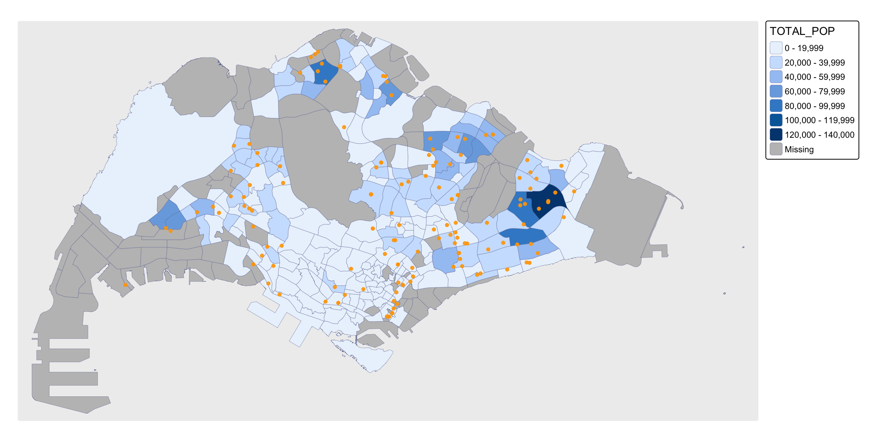
Analysis
New laundry businesses show a clear spatial pattern that aligns with both residential density and commercial activity.
Residential Area Patterns: Laundry businesses concentrate in high-density residential areas. Areas with lower population density show correspondingly fewer or no new laundry establishments, which suggests a strong relationship between residential demand and business location decisions.
Commercial District Concentration: The Central Business District (CBD) exhibits high concentrations of new laundry businesses. It likely serves the large working population who require convenient dry cleaning services near their workplaces.
Spatial Distribution: This dual pattern - clustering in both high-density residential areas and the CBD, indicates that laundry services strategically locate to serve both residential neighborhoods and working professionals.
Mapping geospatial data sets
par(bg = "#EEEEEE")
plot(st_geometry(mpsz_cl), border = "grey70")
plot(st_geometry(biz_9602_sf), add = TRUE, col = "#BA487F", pch = 16, cex = 0.5)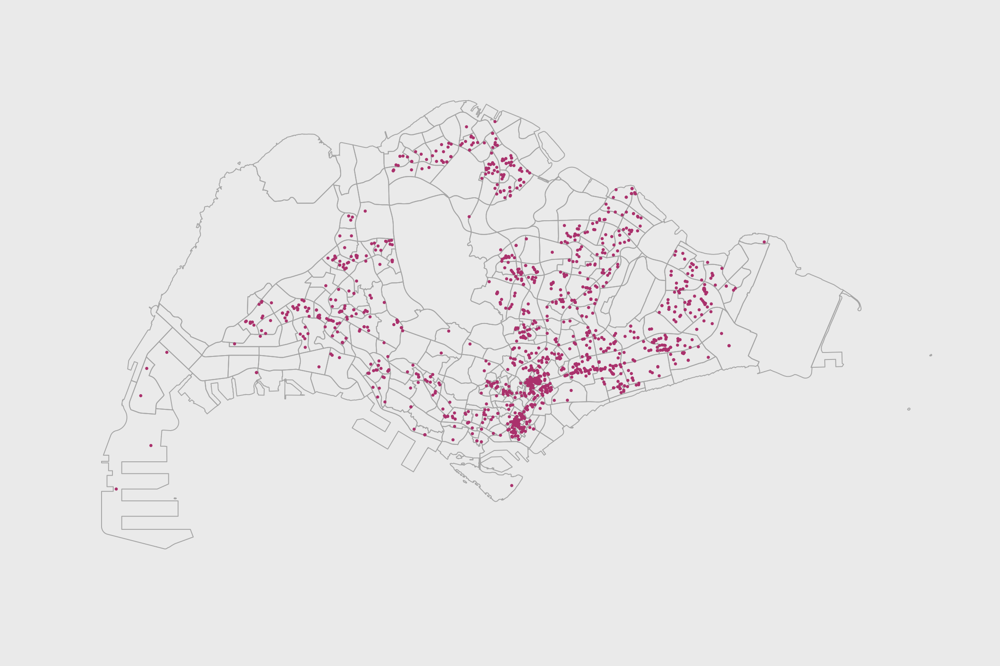
Mapping with population
par(bg = "#EEEEEE")
#tmap_mode("plot")
tm_shape(mpsz_pop2024) +
tm_polygons(col = "TOTAL_POP",
border.col = "#7077A1", lwd = 0.3) +
tm_shape(biz_9602_sf) +
tm_dots(col = "deeppink3", size = 0.2, alpha = 0.9) +
tm_layout(bg.color = "#EEEEEE",
outer.bg.color = NA,
frame = FALSE,
legend.bg.color = "transparent",
legend.frame = FALSE)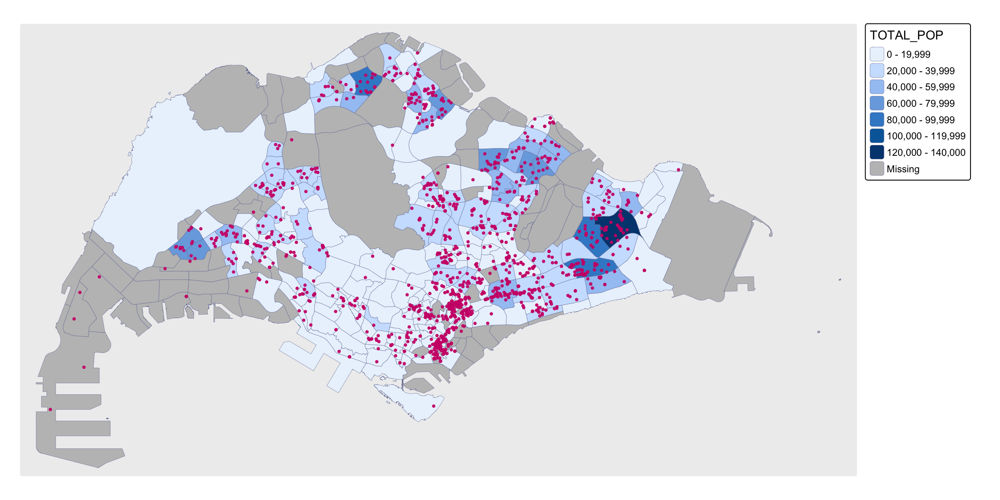
Analysis
New beauty service establishments show a spatial pattern similar to laundry services, but with significantly higher overall density concentrations.
Residential Area Distribution: In residential neighborhoods, beauty services show a more dispersed pattern compared to the central areas. While the density of new establishments correlates positively with residential population levels, areas with low population still have few business providers. Even for non-residential areas in the west, there are also new businesses there, likely to serve working professional or representing locations of chain store offices.
Commercial Center Concentration: Beauty services demonstrate particularly strong density in central south areas, likely targeting areas with high concentrations of commercial buildings and shopping centers. This concentration is even more evident than that observed for laundry services.
Mapping geospatial data sets
par(bg = "#EEEEEE")
plot(st_geometry(mpsz_cl), border = "grey70")
plot(st_geometry(biz_86204_sf), add = TRUE, col = "#18978F", pch = 16, cex = 0.8)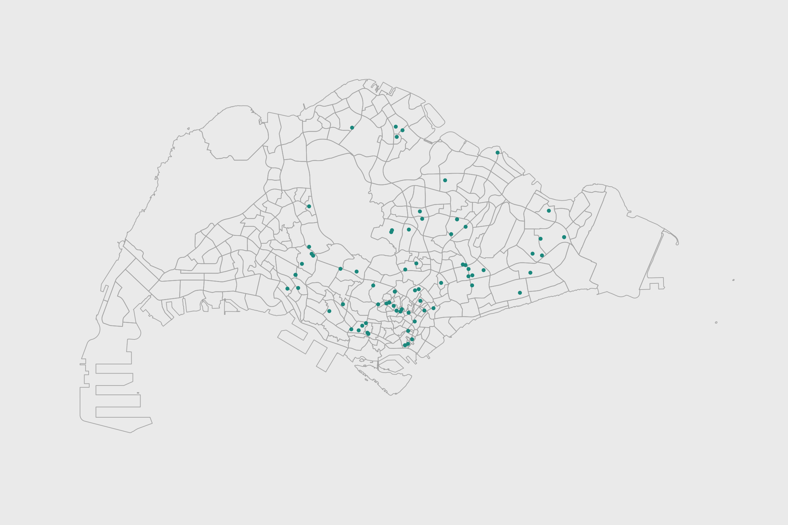
Mapping with population
par(bg = "#EEEEEE")
tmap_mode("plot")
tm_shape(mpsz_pop2024) +
tm_polygons(col = "TOTAL_POP",
border.col = "#7077A1", lwd = 0.3) +
tm_shape(biz_86204_sf) +
tm_dots(col = "darkcyan", size = 0.3, alpha = 0.9) +
tm_layout(bg.color = "#EEEEEE",
outer.bg.color = NA,
frame = FALSE,
legend.bg.color = "transparent",
legend.frame = FALSE)Analysis
Dental service establishments display a distinctly different spatial pattern compared to laundry and beauty services and show a more selective location strategy.
Selective Geographic Distribution: Unlike the other 2 business types, dental services do not establish in every subzone. Instead, they cluster in specific subzones. They also have a clear preference for central locations over residential areas.
Central Location Dominance: The majority of new dental services concentrate in central Singapore, significantly outnumbering those in residential areas. This pattern suggests that dental practices strategically locate in medical or commercial buildingswhere they can serve a broader catchment area.
Limited Residential Presence: While some new dental services do establish in residential neighborhoods, these are relatively few and appear in select subzones only. This selective distribution indicates that residential areas are not the preferred location type for new dental businesses. This is likely due to different service requirements and patient accessibility needs compared to laundry and beauty services.
3.1 Spatial KDE
To compute the businesses’ spatial KDE, we will first perform data wrangling before we compute KDE and plot the results.
3.1.1 Geospatial data wrangling
In this section, we will convert the sf objects to spatstat ppp and owin object.
Convert sf data frames to ppp class
biz_9601_ppp <- as.ppp(biz_9601_sf)
write_rds(biz_9601_ppp, "data/rds/biz_9601_ppp.rds")biz_9601_ppp <- read_rds("data/rds/biz_9601_ppp.rds")Create Owin object
sg_owin <- as.owin(mpsz_cl)Combine point events object and owin object
biz_9601_ppp = biz_9601_ppp[sg_owin]
biz_9601_pppMarked planar point pattern: 150 points
Mark variables:
uen issuance_agency_id entity_name entity_type_description
business_constitution_description company_type_description
paf_constitution_description entity_status_description date uen_issue_date
address_type block street_name level_no unit_no building_name postal_code
other_address_line1 other_address_line2 account_due_date annual_return_date
primary_ssic_code primary_ssic_description primary_user_described_activity YEAR
MONTH_NUM MONTH_ABBR SEARCHVAL BLK_NO ROAD_NAME BUILDING ADDRESS LATITUDE
LONGITUDE input_postcode_9601 SEARCHVAL.1 BLK_NO.1 ROAD_NAME.1 BUILDING.1
ADDRESS.1 POSTAL.1 X.1 Y.1 LATITUDE.1 LONGITUDE.1 SEARCHVAL.2 BLK_NO.2
ROAD_NAME.2 BUILDING.2 ADDRESS.2 POSTAL.2 X.2 Y.2 LATITUDE.2 LONGITUDE.2
SEARCHVAL.3 BLK_NO.3 ROAD_NAME.3 BUILDING.3 ADDRESS.3 POSTAL.3 X.3 Y.3
LATITUDE.3 LONGITUDE.3 SEARCHVAL.4 BLK_NO.4 ROAD_NAME.4 BUILDING.4 ADDRESS.4
POSTAL.4 X.4 Y.4 LATITUDE.4 LONGITUDE.4 SEARCHVAL.5 BLK_NO.5 ROAD_NAME.5
BUILDING.5 ADDRESS.5 POSTAL.5 X.5 Y.5 LATITUDE.5 LONGITUDE.5 SEARCHVAL.6
BLK_NO.6 ROAD_NAME.6 BUILDING.6 ADDRESS.6 POSTAL.6 X.6 Y.6 LATITUDE.6
LONGITUDE.6 SEARCHVAL.7 BLK_NO.7 ROAD_NAME.7 BUILDING.7 ADDRESS.7 POSTAL.7 X.7
Y.7 LATITUDE.7 LONGITUDE.7 SEARCHVAL.8 BLK_NO.8 ROAD_NAME.8 BUILDING.8
ADDRESS.8 POSTAL.8 X.8 Y.8 LATITUDE.8 LONGITUDE.8 SEARCHVAL.9 BLK_NO.9
ROAD_NAME.9 BUILDING.9 ADDRESS.9 POSTAL.9 X.9 Y.9 LATITUDE.9 LONGITUDE.9
window: polygonal boundary
enclosing rectangle: [2667.54, 55941.94] x [21448.47, 50256.33] unitsConvert sf data frames to ppp class
biz_9602_ppp <- as.ppp(biz_9602_sf)
write_rds(biz_9602_ppp, "data/rds/biz_9602_ppp.rds")biz_9602_ppp <- read_rds("data/rds/biz_9602_ppp.rds")Combine point events object and owin object
biz_9602_ppp = biz_9602_ppp[sg_owin]
biz_9602_pppMarked planar point pattern: 1762 points
Mark variables:
uen issuance_agency_id entity_name entity_type_description
business_constitution_description company_type_description
paf_constitution_description entity_status_description date uen_issue_date
address_type block street_name level_no unit_no building_name postal_code
other_address_line1 other_address_line2 account_due_date annual_return_date
primary_ssic_code primary_ssic_description primary_user_described_activity YEAR
MONTH_NUM MONTH_ABBR SEARCHVAL BLK_NO ROAD_NAME BUILDING ADDRESS LATITUDE
LONGITUDE SEARCHVAL.1 BLK_NO.1 ROAD_NAME.1 BUILDING.1 ADDRESS.1 POSTAL.1 X.1
Y.1 LATITUDE.1 LONGITUDE.1 SEARCHVAL.2 BLK_NO.2 ROAD_NAME.2 BUILDING.2
ADDRESS.2 POSTAL.2 X.2 Y.2 LATITUDE.2 LONGITUDE.2 SEARCHVAL.3 BLK_NO.3
ROAD_NAME.3 BUILDING.3 ADDRESS.3 POSTAL.3 X.3 Y.3 LATITUDE.3 LONGITUDE.3
SEARCHVAL.4 BLK_NO.4 ROAD_NAME.4 BUILDING.4 ADDRESS.4 POSTAL.4 X.4 Y.4
LATITUDE.4 LONGITUDE.4 SEARCHVAL.5 BLK_NO.5 ROAD_NAME.5 BUILDING.5 ADDRESS.5
POSTAL.5 X.5 Y.5 LATITUDE.5 LONGITUDE.5 input_postcode_9602 SEARCHVAL.6
BLK_NO.6 ROAD_NAME.6 BUILDING.6 ADDRESS.6 POSTAL.6 X.6 Y.6 LATITUDE.6
LONGITUDE.6 SEARCHVAL.7 BLK_NO.7 ROAD_NAME.7 BUILDING.7 ADDRESS.7 POSTAL.7 X.7
Y.7 LATITUDE.7 LONGITUDE.7 SEARCHVAL.8 BLK_NO.8 ROAD_NAME.8 BUILDING.8
ADDRESS.8 POSTAL.8 X.8 Y.8 LATITUDE.8 LONGITUDE.8 SEARCHVAL.9 BLK_NO.9
ROAD_NAME.9 BUILDING.9 ADDRESS.9 POSTAL.9 X.9 Y.9 LATITUDE.9 LONGITUDE.9
window: polygonal boundary
enclosing rectangle: [2667.54, 55941.94] x [21448.47, 50256.33] unitsConvert sf data frames to ppp class
biz_86204_ppp <- as.ppp(biz_86204_sf)
write_rds(biz_86204_ppp, "data/rds/biz_86204_ppp.rds")biz_86204_ppp <- read_rds("data/rds/biz_86204_ppp.rds")Combine point events object and owin object
biz_86204_ppp = biz_86204_ppp[sg_owin]
biz_86204_pppMarked planar point pattern: 81 points
Mark variables:
uen issuance_agency_id entity_name entity_type_description
business_constitution_description company_type_description
paf_constitution_description entity_status_description date uen_issue_date
address_type block street_name level_no unit_no building_name postal_code
other_address_line1 other_address_line2 account_due_date annual_return_date
primary_ssic_code primary_ssic_description primary_user_described_activity YEAR
MONTH_NUM MONTH_ABBR SEARCHVAL BLK_NO ROAD_NAME BUILDING ADDRESS LATITUDE
LONGITUDE input_postcode_86204 SEARCHVAL.1 BLK_NO.1 ROAD_NAME.1 BUILDING.1
ADDRESS.1 POSTAL.1 X.1 Y.1 LATITUDE.1 LONGITUDE.1 SEARCHVAL.2 BLK_NO.2
ROAD_NAME.2 BUILDING.2 ADDRESS.2 POSTAL.2 X.2 Y.2 LATITUDE.2 LONGITUDE.2
SEARCHVAL.3 BLK_NO.3 ROAD_NAME.3 BUILDING.3 ADDRESS.3 POSTAL.3 X.3 Y.3
LATITUDE.3 LONGITUDE.3 SEARCHVAL.4 BLK_NO.4 ROAD_NAME.4 BUILDING.4 ADDRESS.4
POSTAL.4 X.4 Y.4 LATITUDE.4 LONGITUDE.4 SEARCHVAL.5 BLK_NO.5 ROAD_NAME.5
BUILDING.5 ADDRESS.5 POSTAL.5 X.5 Y.5 LATITUDE.5 LONGITUDE.5
window: polygonal boundary
enclosing rectangle: [2667.54, 55941.94] x [21448.47, 50256.33] units3.1.2 Clark-Evans test
In this section, we will perform Clark-Evans tests for the 3 business entities separately, to quantify whether a point pattern is clustered, random, or uniformly spaced. The result will help us understand the underlying spatial patterns of each business type. This will inform our interpretation of the subsequent KDE analysis.
The test hypotheses are:
H₀ = The distribution of laundry services are randomly distributed.
H₁ = The distribution of laundry services are not randomly distributed.
The 95% confident interval will be used.
set.seed(1234)
clarkevans_9601 <- clarkevans.test(biz_9601_ppp,
correction="none",
clipregion="sg_owin",
alternative=c("clustered"),
method="MonteCarlo",
nsim=99)
write_rds(clarkevans_9601, "data/rds/clarkevans_9601.rds")clarkevans_9601 <- read_rds("data/rds/clarkevans_9601.rds")
clarkevans_9601
Clark-Evans test
No edge correction
Monte Carlo test based on 99 simulations of CSR with fixed n
data: biz_9601_ppp
R = 0.59188, p-value = 0.01
alternative hypothesis: clustered (R < 1)Insight
Laundry service R = 0.59183 & p-value = 0.05 shows the distribution is not random. As R value is between 0.5-1.0, there are some clustering in residential areas. It is more dispersed to serve neighbourhood needs, but it is not random.
The test hypotheses are:
H₀ = The distribution of beauty services are randomly distributed.
H₁ = The distribution of beauty services are not randomly distributed. ’
The 95% confident interval will be used.
set.seed(1234)
clarkevans_9602 <- clarkevans.test(biz_9602_ppp,
correction="none",
clipregion="sg_owin",
alternative=c("clustered"),
method="MonteCarlo",
nsim=99)
write_rds(clarkevans_9602, "data/rds/clarkevans_9602.rds")clarkevans_9602 <- read_rds("data/rds/clarkevans_9602.rds")
clarkevans_9602
Clark-Evans test
No edge correction
Monte Carlo test based on 99 simulations of CSR with fixed n
data: biz_9602_ppp
R = 0.35847, p-value = 0.01
alternative hypothesis: clustered (R < 1)Insight
Beauty services R = 0.35901 & p-value = 0.05 indicates that they are not random. The R value is 0.0-0.5, showing strong clustering, meaning that the points are very close together.
The test hypotheses are:
H₀ = The distribution of dental services are randomly distributed.
H₁ = The distribution of dental services are not randomly distributed.
The 95% confident interval will be used.
set.seed(1234)
clarkevans_86204 <- clarkevans.test(biz_86204_ppp,
correction="none",
clipregion="sg_owin",
alternative=c("clustered"),
method="MonteCarlo",
nsim=99)
write_rds(clarkevans_86204, "data/rds/clarkevans_86204.rds")clarkevans_86204 <- read_rds("data/rds/clarkevans_86204.rds")
clarkevans_86204
Clark-Evans test
No edge correction
Monte Carlo test based on 99 simulations of CSR with fixed n
data: biz_86204_ppp
R = 0.49038, p-value = 0.01
alternative hypothesis: clustered (R < 1)Insight
Dental service R = 0.49038 & p-value = 0.05, so the distribution of dental businesses are not random. As R value is around 0.5, it shows moderate to strong clustering. This is possibly due to medical professional buildings or proximity to hospitals.
3.1.3 Compute KDE with automatic bandwidth
Now we will compute KDE to visualise and analyse first-order spatial point patterns. We use automatic bandwidth and smoothing kernel “gaussian” to derive the results.
biz_9601_ppp_km <- rescale.ppp(biz_9601_ppp, 1000, "km")
bw.ppl(biz_9601_ppp_km) sigma
1.247144 par(bg = "#EEEEEE")
kde_biz_9601_ab <- density(
biz_9601_ppp_km, sigma = bw.ppl, edge = TRUE, kernel = "gaussian"
)
plot(kde_biz_9601_ab, main = "bw.ppl",
col = terrain.colors(256))
Analysis
The KDE output reveals a clustered spatial pattern with distinct concentration hierarchies across Singapore.
Two major clusters dominate the distribution pattern. The highest density cluster is located in the city center area, coinciding with areas of intense commercial activity. A secondary major cluster is still within the central area (Chinatown, Boat Quay) with lower but still significant density values. Other clusters of much lower density are distributed across northern, eastern, and western Singapore.
Interestingly, these density areas show connectivity patterns, forming corridors or networks that link different concentration areas. This creates an integrated service network rather than isolated hot spots. The overall pattern suggests that the laundry services concentrate heavily in commercial centers for maximum accessibility, while maintaining smaller service nodes throughout residential areas to ensure neighborhood-level coverage.
biz_9602_ppp_km <- rescale.ppp(biz_9602_ppp, 1000, "km")
bw.ppl(biz_9602_ppp_km) sigma
0.4404606 par(bg = "#EEEEEE")
kde_biz_9602_ab <- density(
biz_9602_ppp_km, sigma = bw.ppl, edge = TRUE, kernel = "gaussian"
)
plot(kde_biz_9602_ab, main = "bw.ppl",
col = terrain.colors(256))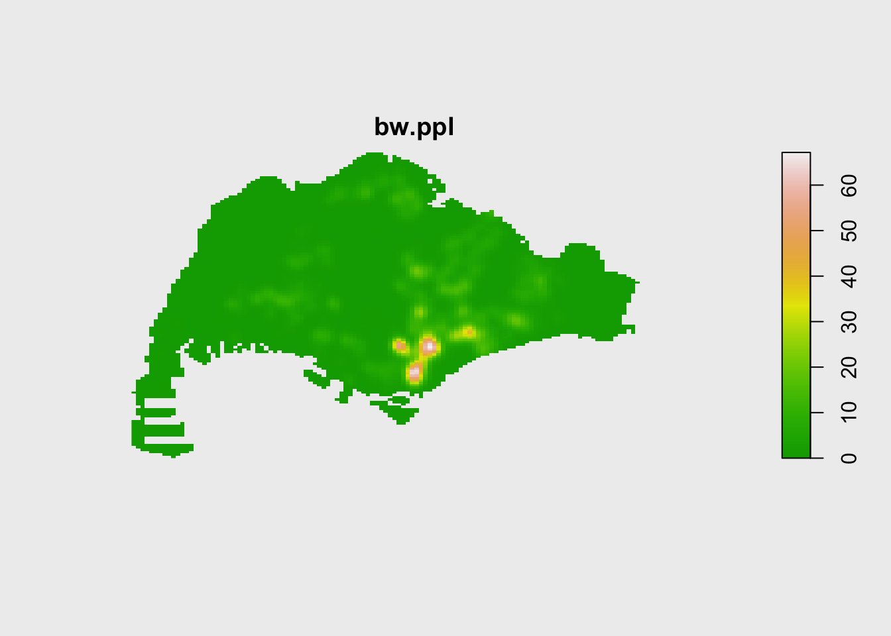
Analysis
The automatic bandwidth KDE output reveals a clustered pattern with multiple major concentration areas of varying intensities. Several highest density clusters (with density values reaching 60+) are located in the central region, where both commercial and residential activities converge. These hot spots show much higher density values compared to laundry services, indicating greater market concentration.
Additional clustering of lower density is distributed across northern, eastern, and western Singapore. These smaller clusters maintain strategic proximity to residential areas, serving both living and working communities.
The overall pattern suggests that beauty services are heavily concentrated in commercial/shopping centers with many other satellite clusters in residential areas to serve nearby residents.
biz_86204_ppp_km <- rescale.ppp(biz_86204_ppp, 1000, "km")
bw.ppl(biz_86204_ppp_km) sigma
1.519248 par(bg = "#EEEEEE")
kde_biz_86204_ab <- density(
biz_86204_ppp_km, sigma = bw.ppl, edge = TRUE, kernel = "gaussian"
)
plot(kde_biz_86204_ab, main = "bw.ppl",
col = terrain.colors(256))
Analysis
The dental services KDE output reveals very concentrated clustered pattern with only few major concentration areas of varying intensities. The largest cluster is located at the central region, followed by a few satellite clusters in residential areas.
This shows that the overall new dental services employ a central-focused strategy for location, with most clinics located in large medical, commercial, or office buildings, rather than neighborhood buildings. Since residents normally visit dental clinics 1-2 times a year, dental businesses likely locate centrally to cater the service to a broader customers base, so as to ensrure the location is conveniently accessible by the majority of customers.
3.2 Spatio-Temporal KDE
Jaundry, Beauty, and Dental business types have 150, 1762 and 81 points respectively during Jan 2024 - June 2025. In this study, we will slice the data compute quarterly spatio-temporal KDE to understand seasonal patterns.
3.2.1 Visualise business entity points by quarter
biz_9601_quarter <- biz_9601_sf %>%
mutate(
quarter = case_when(
MONTH_NUM %in% c(1, 2, 3) ~ "Q1",
MONTH_NUM %in% c(4, 5, 6) ~ "Q2",
MONTH_NUM %in% c(7, 8, 9) ~ "Q3",
MONTH_NUM %in% c(10, 11, 12) ~ "Q4"
),
year_quarter = paste(YEAR, quarter, sep = "-")
)
tmap_options(bg.color = "#EEEEEE")
tm_shape(mpsz_pop2024) +
tm_polygons(fill = "#FFF2F2", col = "grey80") +
tm_shape(biz_9601_quarter) +
tm_dots(fill ="#476EAE", size = 0.4) +
tm_facets(by = "year_quarter", free.coords = FALSE, drop.units = TRUE,
ncol = 2) +
tm_layout(
main.title = "Laundry Services - Quarterly Density",
bg.color = "#EED3D9")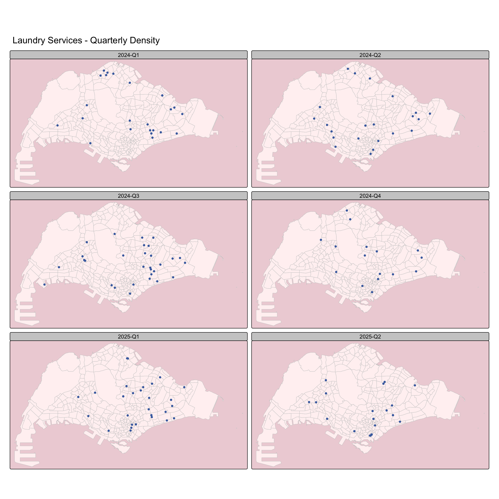
Analysis
The visualisation above shows the new laundry businesses spatial patters by quarter from 2024-Q1 to 2025-Q2. Several dustubct temporal trends are evident.
Northern areas: After notable laundry service establishments in northern Singapore during the first half of 2024 (Q1-Q2), new business openings in this region significantly decreased, with zero to very few establishments in subsequent quarters.
Other areas: On the other hand, the central and eastern regions show sustained business growth throughout the study period and maintained consistent establishment patterns across all quarters.
biz_9602_quarter <- biz_9602_sf %>%
mutate(
quarter = case_when(
MONTH_NUM %in% c(1, 2, 3) ~ "Q1",
MONTH_NUM %in% c(4, 5, 6) ~ "Q2",
MONTH_NUM %in% c(7, 8, 9) ~ "Q3",
MONTH_NUM %in% c(10, 11, 12) ~ "Q4"
),
year_quarter = paste(YEAR, quarter, sep = "-")
)
tmap_options(bg.color = "#EEEEEE")
tm_shape(mpsz_pop2024) +
tm_polygons(fill = "#FFF2F2", col = "grey80") +
tm_shape(biz_9602_quarter) +
tm_dots(fill ="#BA487F", size = 0.2) +
tm_facets(by = "year_quarter", free.coords = FALSE, drop.units = TRUE,
ncol = 2) +
tm_layout(
main.title = "Beauty Services - Quarterly Density",
bg.color = "#CADABF")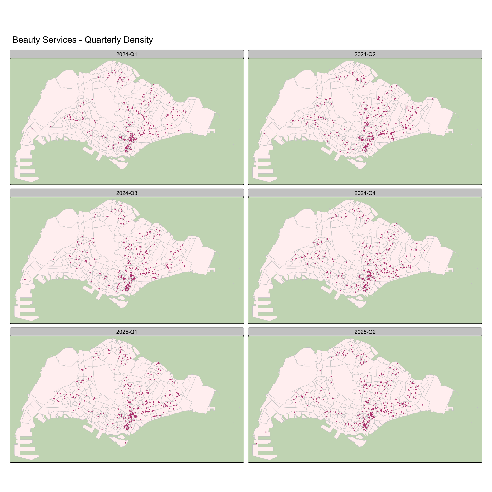
Analysis
The point patterns revealed in the 6 plots above explains consistent growth of the beauty services in both residential and commercial areas, with more density in the city center. Similar to other businesses, the beauty salons or shops may concentrate in commercial / shopping centers in the city center, hence the higher density. There are also beauty services catering to residential areas for easy access at customers’ convenience.
biz_86204_quarter <- biz_86204_sf %>%
mutate(
quarter = case_when(
MONTH_NUM %in% c(1, 2, 3) ~ "Q1",
MONTH_NUM %in% c(4, 5, 6) ~ "Q2",
MONTH_NUM %in% c(7, 8, 9) ~ "Q3",
MONTH_NUM %in% c(10, 11, 12) ~ "Q4"
),
year_quarter = paste(YEAR, quarter, sep = "-")
)
tmap_options(bg.color = "#EEEEEE")
tm_shape(mpsz_pop2024) +
tm_polygons(fill = "#FFF2F2", col = "grey80") +
tm_shape(biz_86204_quarter) +
tm_dots(fill = "#EF7722", size = 0.4) +
tm_facets(by = "year_quarter", free.coords = FALSE, drop.units = TRUE,
ncol = 2) +
tm_layout(
main.title = "Dental Services - Quarterly Density",
bg.color = "#B5C0D0")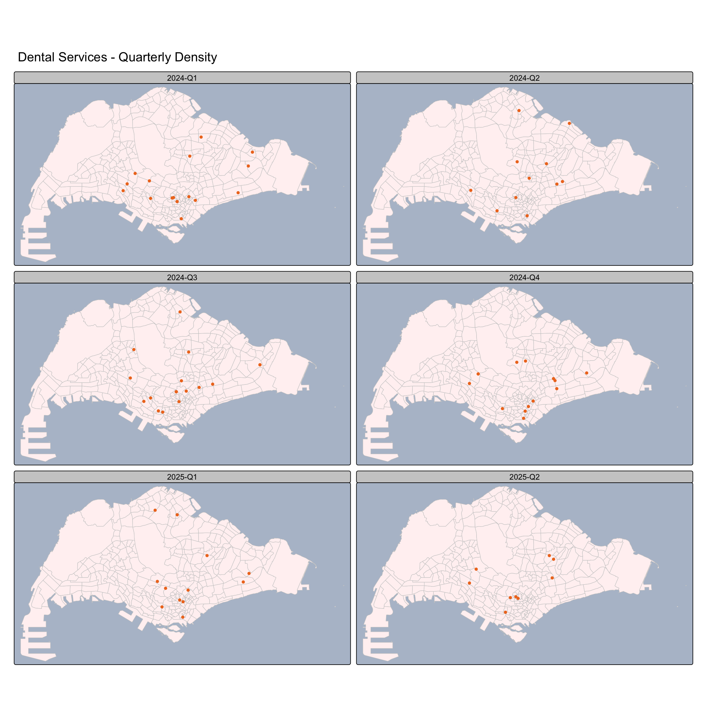
Analysis
Dental service establishments demonstrate a distinctly concentrated spatial strategy with consistent temporal patterns throughout the six quarters from January 2024 to June 2025.
Central Region Dominance: New dental services show persistent clustering in central Singapore across all quarters, indicating this area’s strategic importance for dental practice viability. This central concentration likely reflects proximity to medical districts and commercial centers that maximize patient accessibility.
Regional Distribution Patterns: For northern Singapore, it consistently shows minimal to zero new establishments, suggesting either market saturation or unfavorable conditions for dental practice development. In wester areas, there is very imited expansion and indicates geographic constraints on viable dental service locations. Only in the eastern region it shows moderate but consistent activity - this may suggest emerging opportunities in this specific residential areas.
This pattern also shows that dental healthcare accessibility gaps do exist in northern and outer western areas. Future urban planning should consider medical service corridors to improve healthcare distribution in underserved areas.
3.2.2 Compute Spatio-Temporal STKDE by quarter
# extract laundry data by quarter
kde_biz_9601_quarter <- biz_9601_quarter %>%
dplyr::select(year_quarter)
# create ppp
biz_9601_quarter_ppp <- as.ppp(kde_biz_9601_quarter)
# include owin object
biz_9601_quarter_owin <- biz_9601_quarter_ppp[sg_owin]# Extract laundry data with quarter column
kde_biz_9601_quarter <- biz_9601_quarter %>%
dplyr::select(year_quarter)
# Create ppp object
biz_9601_quarter_ppp <- as.ppp(kde_biz_9601_quarter)
# Check marks are present
table(marks(biz_9601_quarter_ppp))
2024-Q1 2024-Q2 2024-Q3 2024-Q4 2025-Q1 2025-Q2
26 23 31 16 31 23 # Subset to window
biz_9601_quarter_owin <- biz_9601_quarter_ppp[sg_owin]
# Verify marks are still there
table(marks(biz_9601_quarter_owin))
2024-Q1 2024-Q2 2024-Q3 2024-Q4 2025-Q1 2025-Q2
26 23 31 16 31 23 par(bg = "#EEEEEE")
plot(biz_9601_quarter_owin)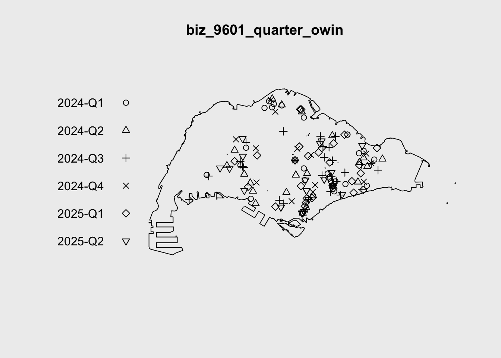
Compute STKDE
# If marks are present, convert to numeric
marks(biz_9601_quarter_owin) <- case_when(
marks(biz_9601_quarter_owin) == "2024-Q1" ~ 1,
marks(biz_9601_quarter_owin) == "2024-Q2" ~ 2,
marks(biz_9601_quarter_owin) == "2024-Q3" ~ 3,
marks(biz_9601_quarter_owin) == "2024-Q4" ~ 4,
marks(biz_9601_quarter_owin) == "2025-Q1" ~ 5,
marks(biz_9601_quarter_owin) == "2025-Q2" ~ 6
)
# Verify conversion worked
summary(marks(biz_9601_quarter_owin)) Min. 1st Qu. Median Mean 3rd Qu. Max.
1.00 2.00 3.00 3.48 5.00 6.00 # Run spatiotemporal density
st_kde_9601 <- spattemp.density(biz_9601_quarter_owin)
summary(st_kde_9601)Spatiotemporal Kernel Density Estimate
Bandwidths
h = 2692.247 (spatial)
lambda = 0.0882 (temporal)
No. of observations
150
Spatial bound
Type: polygonal
2D enclosure: [2667.538, 55941.94] x [21448.47, 50256.33]
Temporal bound
[1, 6]
Evaluation
128 x 128 x 6 trivariate lattice
Density range: [2.767051e-23, 1.279652e-08]Plot STKDE object
tims <- c(1,2,3,4,5,6)
par(mfrow = c(2,3), bg = "#EEEEEE")
for(i in tims){
plot(st_kde_9601, i,
override.par = FALSE,
fix.range = TRUE, main = paste("Laundry Services KDE at Quarter", i
), col = terrain.colors(256))
}
Analysis
The KDE results reveal dynamic spatial-temporal patterns in new laundry service establishments across six quarters, showing both consistency and strategic shifts in location preferences.
Central Region Stability: Throughout most quarters, the central region maintains consistent high-density concentrations. This indicates this area’s sustained viability as a core service hub. This persistence suggests stable demand patterns and favorable business conditions in Singapore’s commercial center.
Temporal Variations: 2024-Q1 shows pronounced northern clustering alongside central concentration, indicating initial market exploration in residential areas. 2024-Q2 ~2025-Q2 demonstrates market rationalisation with reduced northern activity and strengthened central focus. It is notable that the eastern region has intermittent activity. This may suggest emerging opportunities in this residential areas
Based on the spatial-temporal KDE results above, new laundry services do not have consistent density across the 6 quarters. There may be other factors that influence business decisions to expand the service. This also shows that the density consistently concentrate in central region most of the time, except the first quarter in 2024 there was a pronounced growth in the north and east region.
# extract laundry data by quarter
kde_biz_9602_quarter <- biz_9602_quarter %>%
dplyr::select(year_quarter)
# create ppp
biz_9602_quarter_ppp <- as.ppp(kde_biz_9602_quarter)
# include owin object
biz_9602_quarter_owin <- biz_9602_quarter_ppp[sg_owin]par(bg = "#EEEEEE")
plot(biz_9602_quarter_owin)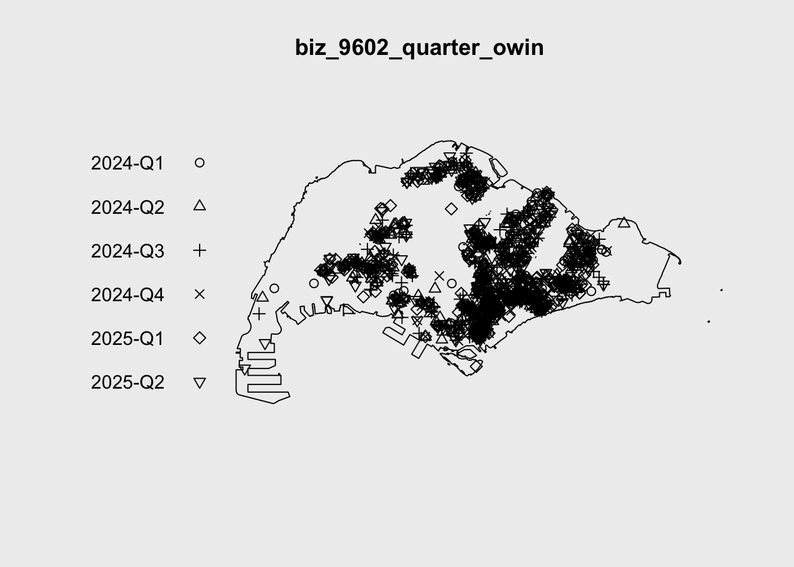
Compute STKDE
#convert year_quarter to numeric
marks(biz_9602_quarter_owin) <- case_when(
marks(biz_9602_quarter_owin) == "2024-Q1" ~ 1,
marks(biz_9602_quarter_owin) == "2024-Q2" ~ 2,
marks(biz_9602_quarter_owin) == "2024-Q3" ~ 3,
marks(biz_9602_quarter_owin) == "2024-Q4" ~ 4,
marks(biz_9602_quarter_owin) == "2025-Q1" ~ 5,
marks(biz_9602_quarter_owin) == "2025-Q2" ~ 6
)
st_kde_9602 <- spattemp.density(biz_9602_quarter_owin)
summary(st_kde_9602)Spatiotemporal Kernel Density Estimate
Bandwidths
h = 1364.177 (spatial)
lambda = 0.0161 (temporal)
No. of observations
1762
Spatial bound
Type: polygonal
2D enclosure: [2667.538, 55941.94] x [21448.47, 50256.33]
Temporal bound
[1, 6]
Evaluation
128 x 128 x 6 trivariate lattice
Density range: [1.627173e-39, 1.255234e-07]Plot STKDE object
tims <- c(1,2,3,4,5,6)
par(mfrow = c(2,3), bg = "#EEEEEE")
for(i in tims){
plot(st_kde_9602, i,
override.par = FALSE,
fix.range = TRUE, main = paste("Beauty Services KDE at Quarter", i
), col = terrain.colors(256))
}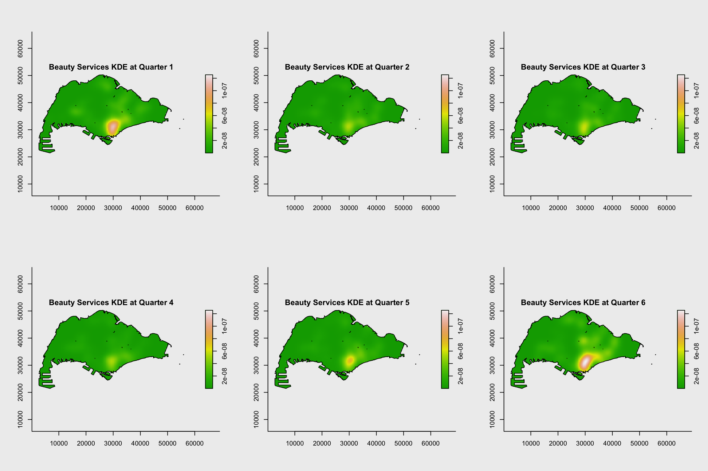
Analysis
The KDE analysis reveals dynamic expansion patterns in beauty service establishments with notable temporal variations across six quarters.
Central Region Dominance: Beauty services maintain consistently high density concentrations in the central region throughout all quarters. This persistent central clustering reflects the strategic importance of commercial districts and shopping areas for beauty businesses.
Temporal Growth Patterns: 2024-Q1 shows strong initial central concentration. 2024-Q2&Q3 demonstrates market consolidation with maintained central focus. The most significant development is the progressive density increase in eastern and northeastern residential areas from 2025-Q1 through 2025-Q2. This expansion suggests market maturation enabling viable residential location strategies, increased demand in these areas, and business model evolution toward neighborhood-based services.
# extract laundry data by quarter
kde_biz_86204_quarter <- biz_86204_quarter %>%
dplyr::select(year_quarter)
# create ppp
biz_86204_quarter_ppp <- as.ppp(kde_biz_86204_quarter)
# include owin object
biz_86204_quarter_owin <- biz_86204_quarter_ppp[sg_owin]par(bg = "#EEEEEE")
plot(biz_86204_quarter_owin)
Compute STKDE
#convert year_quarter to numeric
marks(biz_86204_quarter_owin) <- case_when(
marks(biz_86204_quarter_owin) == "2024-Q1" ~ 1,
marks(biz_86204_quarter_owin) == "2024-Q2" ~ 2,
marks(biz_86204_quarter_owin) == "2024-Q3" ~ 3,
marks(biz_86204_quarter_owin) == "2024-Q4" ~ 4,
marks(biz_86204_quarter_owin) == "2025-Q1" ~ 5,
marks(biz_86204_quarter_owin) == "2025-Q2" ~ 6
)
st_kde_86204 <- spattemp.density(biz_86204_quarter_owin)
summary(st_kde_86204)Spatiotemporal Kernel Density Estimate
Bandwidths
h = 2190.678 (spatial)
lambda = 0.1279 (temporal)
No. of observations
81
Spatial bound
Type: polygonal
2D enclosure: [2667.538, 55941.94] x [21448.47, 50256.33]
Temporal bound
[1, 6]
Evaluation
128 x 128 x 6 trivariate lattice
Density range: [9.274425e-36, 1.45099e-08]Plot STKDE object
tims <- c(1,2,3,4,5,6)
par(mfrow = c(2,3), bg = "#EEEEEE")
for(i in tims){
plot(st_kde_86204, i,
override.par = FALSE,
fix.range = TRUE, main = paste("Dental Services KDE at Quarter", i),
col = terrain.colors(256))
}
Analysis
The dental services KDE reveals a highly concentrated spatial strategy that differs markedly from both laundry and beauty services in its focus and temporal stability.
Central Region Concentration: New dental services demonstrate central clustering during 2024-Q1, 2024-Q3 though 2025-Q2. This concentration reflects the specialised nature of dental healthcare services and their dependence on medical districts, accessibility, and infrastructure. Western Region (Holland area) shows sporadic activity only in Q1, with limited subsequent expansion frp, 2024-Q4, suggesting either market testing or saturation.
Limited Spatial Distribution: Unlike beauty services’ multi-hub strategy, dental services show highly focused clustering patterns with minimal spatial expansion in peripheral areas. This concentration is influenced by 1/ lower establishment numbers compared to other service types and 2/ higher capital requirements for dental practice setup.
Service Distribution Pattern: The concentrated pattern indicates that dental services operate fundamentally differently from daily-use services, requiring strategic central locations to serve customers from across Singapore rather than neighborhood-based provision.
4 Second-order Analysis
With the second-order analysis, we will examine the spatial relationships between points in a pattern.
4.1 Spatial analysis
In this section, we will compute spatial point patterns using randomness tests.
For laundry services, we will use F-function to analyse spatial point process as this function is best for random locations to nearest business. Laundry services may be important to residents, be it dry cleaning or self-operated. We want to observe its distribution whether the placement is random or follows specific spatial strategy.
set.seed(1222)F-function estimation
par(bg = "#EEEEEE")
F_9601 = Fest(biz_9601_ppp)
write_rds(F_9601, "data/rds/F_9601.rds")par(bg = "#EEEEEE")
F_9601 <- read_rds("data/rds/F_9601.rds")
plot(F_9601)
Complete spatial randomness test
We use the hypothesis test below to confirm the spatial patterns above.
H₀ = The distribution of laundry services are randomly distributed.
H₁ = The distribution of laundry services are not randomly distributed. The null hypothesis will be rejected is p-value is smaller than alpha value of 0.05.
F_9601.csr <- envelope(biz_9601_ppp, Fest, correction = "all", nsim = 99)
write_rds(F_9601.csr, "data/rds/F_9601.csr")Plot simulation
par(bg = "#EEEEEE")
F_9601.csr <- read_rds("data/rds/F_9601.csr")
plot(F_9601.csr)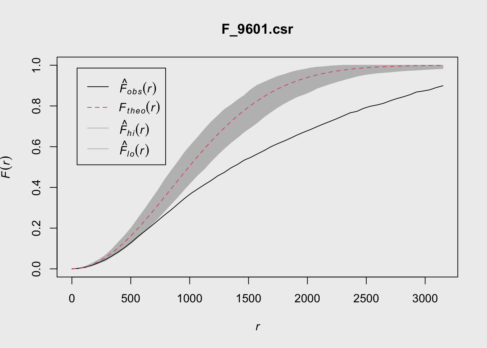
Analysis
The plot shows the observed line falls below the theoretical line and at or near the lower boundary of the envelope at the shorter distance, indicating clustering that is statistically significant. The clustering effect is strongest at distances of 500-2000. This indicates that the laundry businesses tend to cluster together with empty areas between.
For beauty services such as hair salons, manicure and pedicure, personal care services, we will use K-function to analyze clustering patterns by examining the expected number of neighboring businesses within given distances. The intention is to identify and quantify clustering at multiple spatial scales.
L-function estimate
L_9602 = Lest(biz_9602_ppp, correction = "Ripley")write_rds(L_9602, "data/rds/L_9602.rds")par(bg = "#EEEEEE")
L_9602 <- read_rds("data/rds/L_9602.rds")
plot(L_9602, . -r ~ r, ylab = "L(d)-r", xlab = "d(m)")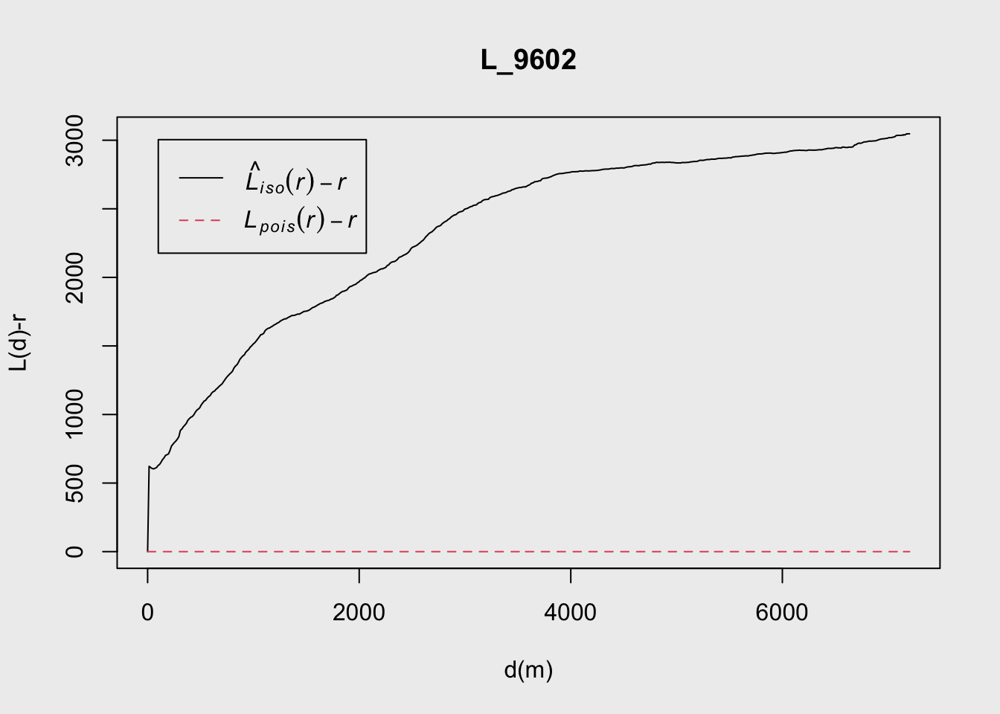
Spatial randomness test
The hypothesis and test are as follows:
H₀ = The distribution of Beauty services are randomly distributed.
H₁ = The distribution of Beauty services are not randomly distributed.
The null hypothesis will be rejected if p-value is smaller than alpha value of 0.05.
L_9602.csr <- envelope(biz_9602_ppp, Lest, nsim = 99, rank = 1)
write_rds(L_9602.csr, "data/rds/L_9602.csr")Plot L-function test
par(bg = "#EEEEEE")
L_9602.csr <- read_rds("data/rds/L_9602.csr")
plot(L_9602.csr, . - r ~ r, xlab = "d", ylab = "L(d)-r")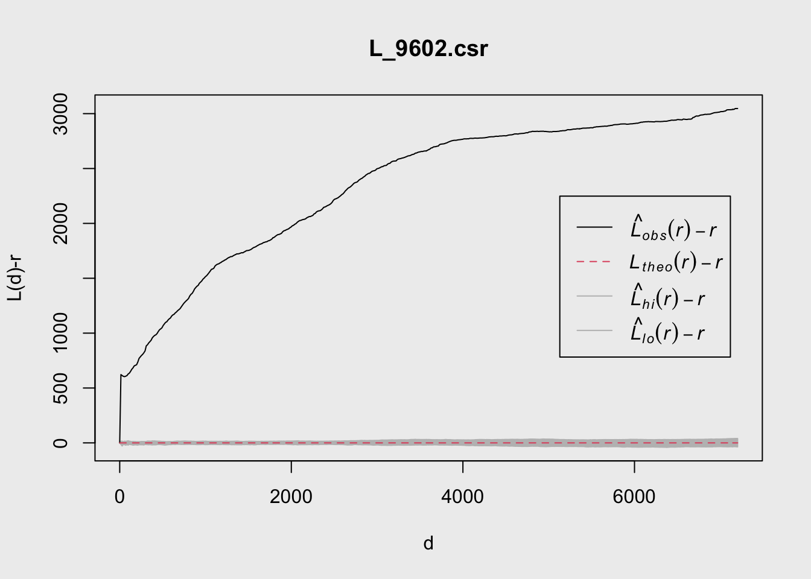
Analysis
Beauty services show the strongest clustering pattern of all 3 business types. The very thin gray envelope means there’s very little uncertainty about randomness. They likely cluster in beauty districts, shopping malls, or commercial strips.
The clustering is so strong it suggests very specific location requirements, which could be high foot traffic areas, fashion/shopping districts, or areas with complementary businesses (like clothing, restaurants), or is easy to access with parking, public transport, near large residences.
The clustering likely creates agglomeration economies with shared customers, referrals, comparison shopping.
For dental services, we will use G-function to analyse the nearest neighbor distance distribution.
G-function estimate
G_86204 = Lest(biz_86204_ppp, correction = "border")
write_rds(G_86204, "data/rds/G_86204.rds")par(bg = "#EEEEEE")
G_86204 <- read_rds("data/rds/G_86204.rds")
plot(G_86204, xlim = c(0, 500))
Spatial randomness test
The hypothesis and test are as follows:
H₀ = The distribution of Beauty services are randomly distributed.
H₁ = The distribution of Beauty services are not randomly distributed.
The null hypothesis will be rejected if p-value is smaller than alpha value of 0.05.
G_86204.csr <- envelope(biz_86204_ppp, Gest, nsim = 99)
write_rds(G_86204.csr, "data/rds/G_86204.csr")Plot G-function test
par(bg = "#EEEEEE")
G_86204.csr <- read_rds("data/rds/G_86204.csr")
plot(G_86204.csr)
Analysis
The observed line is completely above the envelope, and shows a very strong clustering pattern with highly statistically significant. With our obervation earlier on the density of dental businesses in the maps, the pattern suggests dental services form tight professional clusters rather than being distributed based on residential density alone. The results also suggests dental services cluster in professional districts where they benefit from shared facilities & infrastructure, referral network, patient convenience, and zones that concentrates medical services.
4.2 Spatio-Temporal analysis
Perform F-function estimation
biz_9601_quarter_split <- split(biz_9601_quarter_owin, f = as.factor(marks(biz_9601_quarter_owin)))
F_9601_quarter <- lapply(biz_9601_quarter_split, Fest)
par(mfrow = c(3,2), bg = "#EEEEEE")
biz_9601_quarter_names <- c("2024-Q1", "2024-Q2", "2024-Q3", "2024-Q4", "2025-Q1", "2025-Q2")
for (i in 1:6) {
plot(F_9601_quarter[[i]],
main = paste("Laundry Services F-function -", biz_9601_quarter_names[i]))
}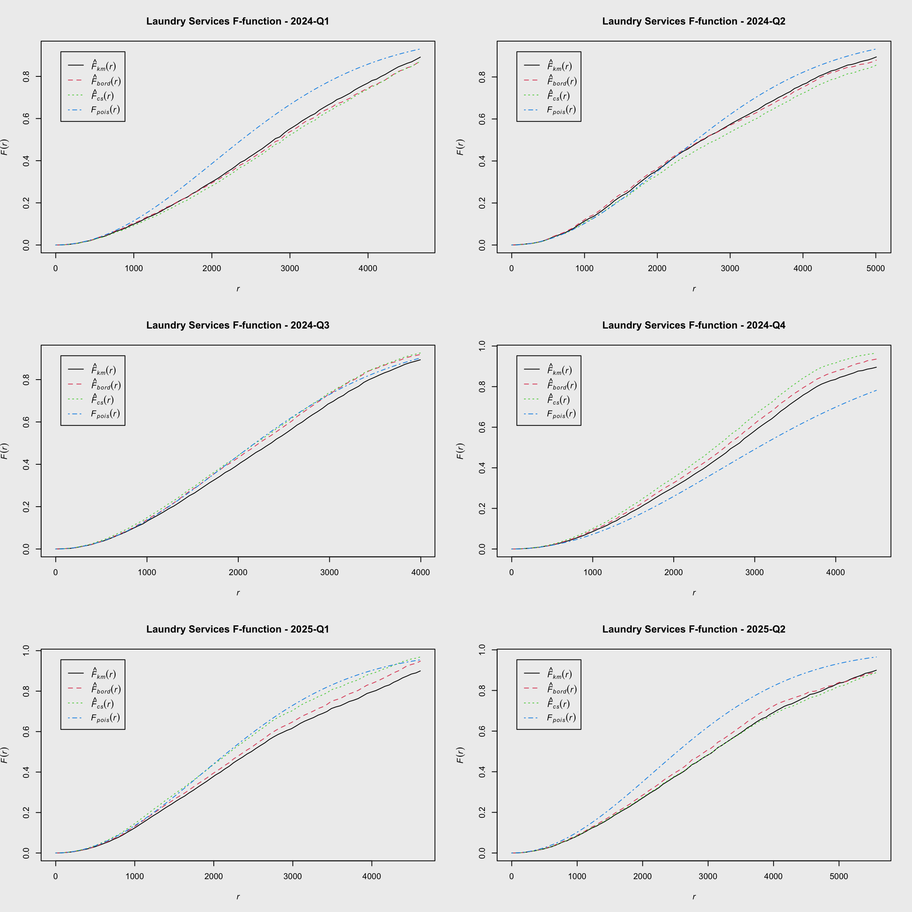
Analysis
During the 6 quarters of observation, most of the time the F_km line is consistenly below F_pois line, except 2024-Q2 and 2024-Q4. This means new laundry services tend to cluster when they open.
For 2024-Q2, F_km appears to cross above and below F_pois at different distances, rather than being consistently above. 2024-Q4 had new entrants that may have pursued different strategies, potentially targeting underserved areas, new development launch, etc.
Perform spatial randomness test for each quarter
Hypothesis test: H₀ = The distribution of laundry services is randomly distributed.
H₁= The distribution of laundry services is not randomly distributed.
Alpha value = 0.05.
F_9601_quarter.csr <- lapply(biz_9601_quarter_split, function(x) envelope(x, Fest, nsim = 99))
write_rds(F_9601_quarter.csr, "data/rds/F_9601_quarter.csr")Plot result of test
par(mfrow = c(3, 2), bg = "#EEEEEE")
F_9601_quarter.csr <- read_rds("data/rds/F_9601_quarter.csr")
biz_9601_quarter_labels <- c(paste0("2024-Q", 1:4), paste0("2025-Q", 1:2))
for (i in 1:6) {
plot(F_9601_quarter.csr[[i]], main = paste("Laundry F-function:", biz_9601_quarter_labels[i]))
}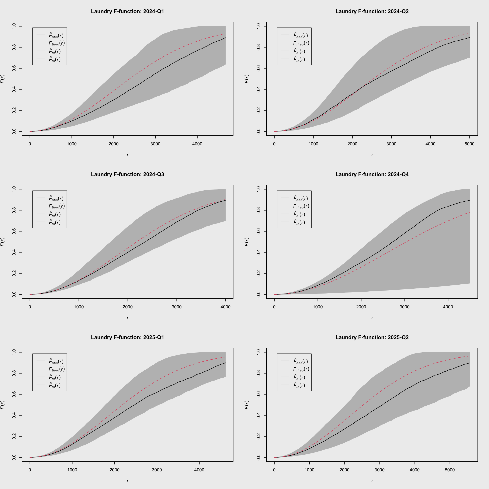
Analysis
- Based on the test result, we found no statistically significant deviation from randomness in any quarter. Therefore, earlier on we observed that F_km below F_pois for 2024-Q4 is not strong enough to be statistically significant. This means weak clustering tendencies, meaning that new laundry services show mild clustering preferences but not strong ones. In addition, the spatial choices are more opportunistic than strategically clustered.
- For business, we observed that in the short term laundry services seem to have less rigid location strategies compared to other service types.
Perform L-function estimation by quarter
biz_9602_quarter_split <- split(biz_9602_quarter_owin, f = as.factor(marks(biz_9602_quarter_owin)))
L_9602_quarter <- lapply(biz_9602_quarter_split, Lest)
par(mfcol = c(3,2), bg = "#EEEEEE")
biz_9602_quarter_names <- c("2024-Q1", "2024-Q2", "2024-Q3", "2024-Q4","2025-Q1", "2025-Q2")
for (i in 1:6) {
plot(L_9602_quarter[[i]],
main = paste("Beauty Services L-function -", biz_9602_quarter_names[i]))
}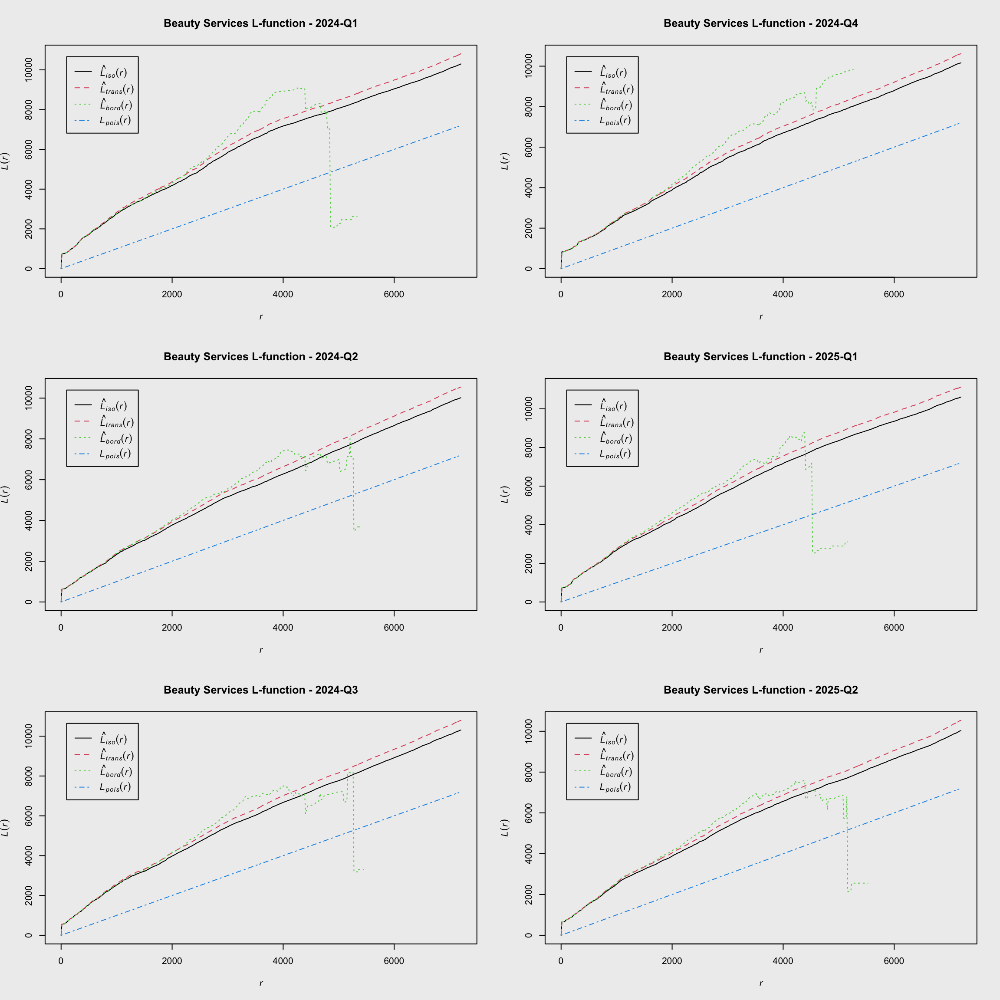
Analysis
- In the visualisation for L-function estimation, the consistent gap between observed and expected values indicates beauty services exhibit robust spatial clustering that persists across all 6 quarters. This clustering is stronger than what would be expected from Singapore’s underlying density patterns alone.
- This temporal pattern suggests beauty services create commercial districts or beauty clusters that are economically beneficial for both businesses (shared customers, reduced marketing costs) and consumers (convenience, comparison shopping).
- It also indicates this clustering strategy is economically stable and likely to continue (6 plots appear to be quite similar), which makes it valuable information for urban planning and business location decisions.
Perform spatial randomness test for each quarter
Hypothesis test:
H₀ = The distribution of laundry services is randomly distributed.
H₁= The distribution of laundry services is not randomly distributed.
Alpha value = 0.05.
L_9602_quarter.csr <- lapply(biz_9602_quarter_split, function(x) envelope(x, Lest, nsim = 99))
write_rds(L_9602_quarter.csr, "data/rds/L_9602_quarter.csr")Plot result of test
par(mfrow = c(3, 2), bg = "#EEEEEE")
L_9602_quarter.csr <- read_rds("data/rds/L_9602_quarter.csr")
biz_9602_quarter_labels <- c(paste0("2024-Q", 1:4), paste0("2025-Q", 1:2))
for (i in 1:6) {
plot(L_9602_quarter.csr[[i]], main = paste("Beauty L-function:", biz_9602_quarter_labels[i]))
}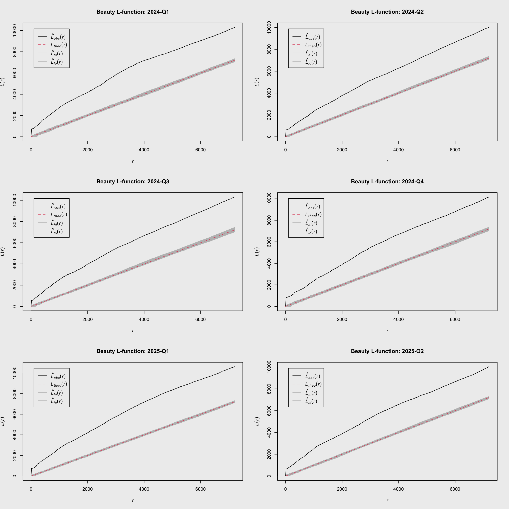
Analysis
The observed L-function being well above the envelope across all six quarters indicates beauty services have very strong clustering that significantly exceeds random expectation. The combination of strong effect size, narrow confidence intervals, and temporal consistency makes this statistically robust clustering patterns and economically meaningful.
The remarkable similarity across all 6 quarters suggests beauty service clustering is a stable market characteristic rather than a temporary or seasonal phenomenon. This indicates that established location strategies that persist over time, mature market dynamics where clustering benefits are well-understood, and possibily consistent consumer preferences for beauty service districts.
Since the pattern holds across the entire distance range (0-6000r) in all 6 quarters, beauty services cluster at multiple spatial scales simultaneously, such as local clustering (shopping centers, beauty districts), regional clustering (concentration in central Singapore).
The consistency also suggests beauty services have developed optimal location strategies that create sustainable competitive advantages through agglomeration, consumer convenience through service concentration, as well as market patterns that new businesses can reliably follow.
Perform G-function estimation by quarter
biz_86204_quarter_split <- split(biz_86204_quarter_owin, f = as.factor(marks(biz_86204_quarter_owin)))
G_86204_quarter <- lapply(biz_86204_quarter_split, Gest)
par(mfrow = c(3,2), bg = "#EEEEEE")
biz_86204_quarter_names <- c("2024-Q1", "2024-Q2", "2024-Q3", "2024-Q4", "2025-Q1", "2025-Q2", "2025-Q3", "2025-Q4")
for (i in 1:6) {
plot(G_86204_quarter[[i]], xlim = c(0, 3000),
main = paste("Dental Services G-function -", biz_86204_quarter_names[i]))
}
Analysis
- Quarters with many steps include 2024-Q1, 2024-Q3, 2-24-Q4, and 2025-Q1: These quarters indicate that dental clinics established at multiple distance scales. Some are very close neighbors (medical complexes) and some medium-distance neighbors (same district).
- Quarters with fewer steps like 2024-Q2 and 2025-Q2: The 2 quarters have more uniform spacing between establishments, showing simpler spatial arrangements. They are either very tight clustering or more dispersed patterns (see 3.2.1).
Perform spatial randomness test for each quarter
Hypothesis test: H₀ = The distribution of laundry services is randomly distributed. H₁= The distribution of laundry services is not randomly distributed.
Alpha value = 0.05.
G_86204_quarter.csr <- lapply(biz_86204_quarter_split, function(x) envelope(x, Gest, nsim = 99))
write_rds(G_86204_quarter.csr, "data/rds/G_86204_quarter.csr")Plot result of test
par(mfrow = c(3, 2), bg = "#EEEEEE")
G_86204_quarter.csr <- read_rds("data/rds/G_86204_quarter.csr")
biz_86204_quarter_labels <- c(paste0("2024-Q", 1:4), paste0("2025-Q", 1:2))
for (i in 1:6) {
plot(G_86204_quarter.csr[[i]], xlim = c(0,3000), main = paste("Dental G-function:", biz_86204_quarter_labels[i]))
}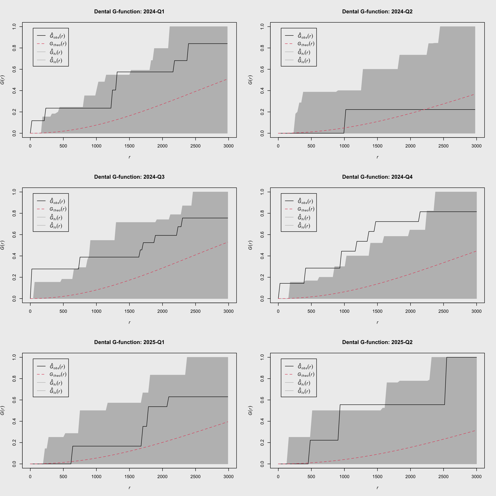
Analysis
Strong clustering quarters like 2024-Q1, 2024-Q3, 2024-Q4, 2025-Q2: have multiple distance ranges showing significant clustering and suggests these are periods of active medical district development.
Weak clustering quarters 2024-Q2 & 2025-Q1: Their observed patterns are mostly within envelope, meaning it’s more random spatial distribution of new establishments. In these 2 quarters, the market conditions may have favored dispersed rather than clustered locations.
Overall dental clustering patterns could be dynamic and context-dependent rather than consistently uniform. Some periods favor medical complex development with tight clustering and other periods see district expansion with medium-distance clustering. Market conditions can influence whether new practices cluster tightly or spread out.
5 Conclusion
Our study reveals each business type exhibits distinct clustering behaviors driven by different operational needs. The beauty services show multi-scale agglomeration - heavy concentration in central region and forming clusters in suburban residential areas. Dental services exhibit tight professional clustering in central region, and laundry services have accessibility-focused patterns.
5.1 Key findings
Laundry service accessibility - The F-function analysis revealed that despite clustering tendencies, laundry services maintain adequate accessibility across Singapore, suggesting successful market coverage that balances agglomeration benefits with customer convenience needs.The industry also grows consistently with clusters concentrated on mostly central region except 2024-Q1 when it also clusters in the north and the east region.
Beauty service stable growth - Beauty services grow very consistently throughout the 18 months since 2024 January. The highest density consistenly focuses on the central region while it also forms smaller clusters in suburban areas. The KDE output shows several very condensed cuslters in the central region. Along with its consistent growth in similar areas, we observed that the new beauty salons tend to open close to each other.
Dental service clustering variations - Our analysis for dental services shows temporal variable clustering patterns (strong in 2024-Q1, 2024-Q3, 2025-Q2 but random in 2024-Q2, 2025-Q1), so clustering isn’t constant but responds to market conditions or seasonal establishment patterns. This reveals that clustering behavior varies significantly over time, so suggests responsiveness to market conditions rather than static location patterns. Overall dental businesses also grow consistenly because new businesses emerge every quarter. However, regionally each quarter the growth is consistent only in central region. New dental businesses appear in different regions each quarter.
Overall we see that the 3 business types all have much higher density in central region and have varying establishment densities across other regions. Laundry services and beauty services that residents need to patron periodically have higher density in more populated areas. Although dental services exhibit similar patterns, the new establishments in suburban areas are very few and only appear in areas with more condensed population.
Support urban land use planning and management
Transit planning: Central region service concentration justifies continued public transit investment and transit-oriented development strategies.
Western region gaps: Consistently lower establishment density in western Singapore indicates infrastructure or regulatory barriers requiring investigation.
Professional districts: Dental services’ tight clustering validates targeted development of medical/professional zones with shared facilities/buildings.
5.2 Limitation
The datasets used for this study are based on new business registration date, rather than their current practice status. Therefore, this study is not able to see a full picture of the current density and spatial spread to identify where are the real hot zones and observe their rise and fall.
We also observed that large dataset requires heavy computation capability, and often the simulation and rendering take much longer time than expected. Therefore, in this study, the numbre of simulation is kept minimum.
5.3 Future works
There are many business categories to study wider range of the businesses spatial growth. In addition, for each business, we can deep dive into their status and location to investigate these industries’ growth and decline.
6 References
Accounting and Corporate Regulatory Authority. (2025). ACRA information on corporate entities [Data set]. Data.gov.sg. https://data.gov.sg/datasets?query=ACRA+information&page=1&resultId=2
Kam, T. S. (2022, December 8). R for geospatial data science and analytics. https://r4gdsa.netlify.app/
Paez, A. (2021). Point pattern analysis IV. In An introduction to spatial data analysis and statistics: A course in R. https://paezha.github.io/spatial-analysis-r/point-pattern-analysis-iv.html#f-function
Singapore Department of Statistics. (2020). Singapore standard industrial classification (SSIC) 2020. https://classification.codes/classifications/industry/ssic-singapore
Urban Redevelopment Authority. (2024, June 6). Master Plan 2019 planning area boundary (no sea) [Data set]. Data.gov.sg. https://data.gov.sg/datasets?query=master+plan&page=1&resultId=d_4765db0e87b9c86336792efe8a1f7a66